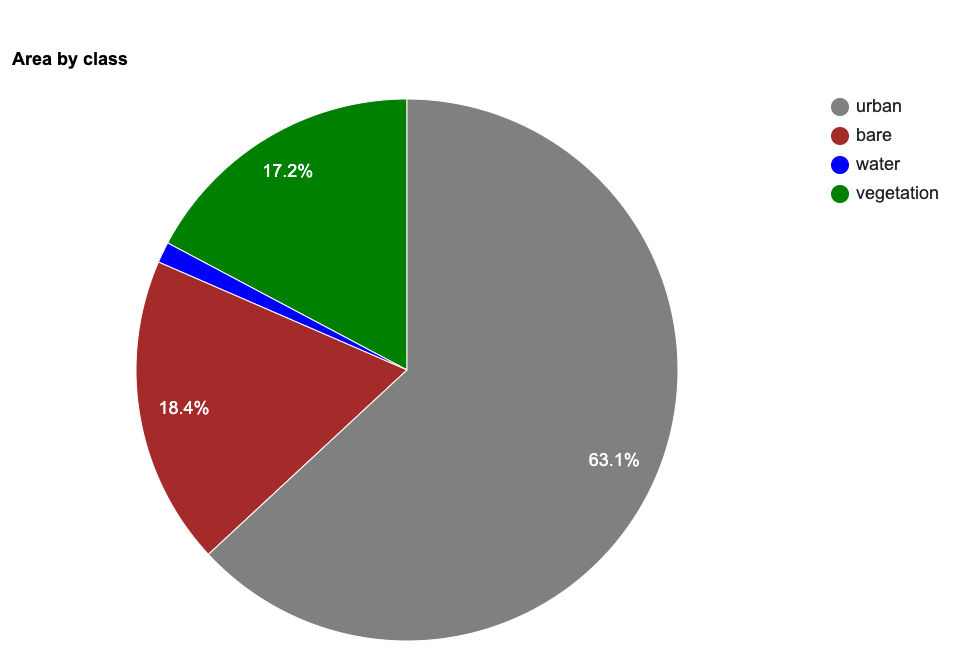

End-to-End Google Earth Engine (Supplementary Course)
Ujaval Gandhi
- Introduction
- Advanced
Supervised Classification Techniques
- k-Fold Cross Validation
- Hyperparameter Tuning
- Post-Processing Classification Results
- Principal Component Analysis (PCA)
- Multi-temporal Composites for Crop Classification
- Computing Correlation
- Calculating Band Correlation Matrix
- Calculating Area by Class
- Spectral Signature Plots
- Using Polygons for Training Data
- Stratified Sampling of GCPs
- Identify Misclassified GCPs
- Image Normalization and Standardization
- Calculate Feature Importance
- Classification with Migrated Training Samples
- Time Series Modeling
- Using SAR data
- Adding Spatial Context
- Advanced Change Detection Techniques
- Image Collection Processing
- Aggregating and Visualizing ImageCollections
- Exporting ImageCollections
- Create Composites at Regular Intervals
- Export ImageCollection Metadata
- Get Pixelwise Dates for Composites
- Filter Images by Cloud Cover in a Region
- Harmonized Landsat Time Series
- Landsat Timelapse Animation with Text
- Percentile Composites
- Medoid Composites
- Visualize Number of Images in Composites
- Visualizing Bands of an Image
- Advanced Image Processing
- User Interface Templates
- Code Sharing and Script Modules
- License
- Citing and Referencing

Introduction
This page contains Supplementary Materials for the End-to-End Google Earth Engine course. It is a collection useful scripts and code snippets that can be adapted for your projects.
Please visit the End-to-End Google Earth Engine course page for the full course material.
Advanced Supervised Classification Techniques
k-Fold Cross Validation
In regular accuracy assessment we split the samples into 2 fractions of training and validation. In k-fold cross validation, this step is repeated multiple times by splitting the data into multiple subsets (i.e folds), using one of these folds as a validation set, and training the model on the remaining folds. This process is repeated multiple times and the accuracy metric from each validation step is averaged to produce a more robust estimate of the model’s performance.

k-Fold Cross-Validation
// Example script for k-Fold Cross Validation
// of Supervised Classification
var s2 = ee.ImageCollection('COPERNICUS/S2_SR_HARMONIZED');
var basin = ee.FeatureCollection("WWF/HydroSHEDS/v1/Basins/hybas_7");
var gcp = ee.FeatureCollection("users/ujavalgandhi/e2e/arkavathy_gcps");
var composite = ee.Image('users/ujavalgandhi/e2e/arkavathy_multiband_composite');
// Function to split a featurecollection into k-folds
var kFoldSplit = function(features, folds) {
var step = ee.Number(1).divide(folds);
var thresholds = ee.List.sequence(
0, ee.Number(1).subtract(step), step);
// Use seed so the distribution is stable across
// all calls of the function
features = features.randomColumn({seed: 0});
var splits = thresholds.map(function (threshold) {
var trainingSplit = features.filter(
ee.Filter.or(
ee.Filter.lt('random', threshold),
ee.Filter.gte('random', ee.Number(threshold).add(step))
)
);
var validationSplit = features.filter(
ee.Filter.and(
ee.Filter.gt('random', threshold),
ee.Filter.lte('random', ee.Number(threshold).add(step))
)
)
return ee.Feature(null, {
'training': trainingSplit,
'validation': validationSplit
});
});
return ee.FeatureCollection(splits);
};
// Use k=10
var folds = kFoldSplit(gcp, 10);
// Check the split
print('Fold 0 Training Samples', folds.first().get('training'));
print('Fold 0 Validation Samples', folds.first().get('validation'));
// Assess the accuracy for each pair of training and validation
var accuracies = ee.FeatureCollection(folds.map(function(fold) {
var trainingGcp = fold.get('training');
var validationGcp = fold.get('validation');
// Overlay the point on the image to get training data.
var training = composite.sampleRegions({
collection: trainingGcp,
properties: ['landcover'],
scale: 10,
tileScale: 16
});
// Train a classifier.
var classifier = ee.Classifier.smileRandomForest(50)
.train({
features: training,
classProperty: 'landcover',
inputProperties: composite.bandNames()
});
var test = composite.sampleRegions({
collection: validationGcp,
properties: ['landcover'],
scale: 10,
tileScale: 16
});
var accuracy = test
.classify(classifier)
.errorMatrix('landcover', 'classification')
.accuracy();
return ee.Feature(null, {'accuracy': accuracy});
}));
print('K-fold Validation Results',
accuracies.aggregate_array('accuracy'));
var meanAccuracy = accuracies.reduceColumns({
reducer: ee.Reducer.mean(),
selectors: ['accuracy']});
print('Mean Accuracy', meanAccuracy.get('mean'));Hyperparameter Tuning
A recommended best practice for improving the accuracy of your
machine learning model is to tune different parameters. For example,
when using the ee.Classifier.smileRandomForest()
classifier, we must specify the Number of Trees. We know that
higher number of trees result in more computation requirement, but it
doesn’t necessarily result in better results. Instead of guessing, we
programmatically try a range of values and choose the smallest value
possible that results in the highest accuracy.

Supervised Classification Output
var s2 = ee.ImageCollection('COPERNICUS/S2_SR_HARMONIZED');
var basin = ee.FeatureCollection('WWF/HydroSHEDS/v1/Basins/hybas_7');
var gcp = ee.FeatureCollection('users/ujavalgandhi/e2e/arkavathy_gcps');
var alos = ee.ImageCollection('JAXA/ALOS/AW3D30/V3_2');
var arkavathy = basin.filter(ee.Filter.eq('HYBAS_ID', 4071139640));
var geometry = arkavathy.geometry();
Map.centerObject(geometry);
// Load the Composite
// This was Exported as an Asset previously
var composite = ee.Image('users/ujavalgandhi/e2e/arkavathy_multiband_composite');
var visParams = {bands: ['B4', 'B3', 'B2'], min: 0, max: 3000, gamma: 1.2};
Map.addLayer(composite.clip(geometry), visParams, 'RGB');
// Normalize the image
// Machine learning algorithms work best on images when all features have
// the same range
// Function to Normalize Image
// Pixel Values should be between 0 and 1
// Formula is (x - xmin) / (xmax - xmin)
//**************************************************************************
function normalize(image){
var bandNames = image.bandNames();
// Compute min and max of the image
var minDict = image.reduceRegion({
reducer: ee.Reducer.min(),
geometry: geometry,
scale: 10,
maxPixels: 1e9,
bestEffort: true,
tileScale: 16
});
var maxDict = image.reduceRegion({
reducer: ee.Reducer.max(),
geometry: geometry,
scale: 10,
maxPixels: 1e9,
bestEffort: true,
tileScale: 16
});
var mins = ee.Image.constant(minDict.values(bandNames));
var maxs = ee.Image.constant(maxDict.values(bandNames));
var normalized = image.subtract(mins).divide(maxs.subtract(mins));
return normalized;
}
var composite = normalize(composite);
// Add a random column and split the GCPs into training and validation set
var gcp = gcp.randomColumn();
// This being a simpler classification, we take 60% points
// for validation. Normal recommended ratio is
// 70% training, 30% validation
var trainingGcp = gcp.filter(ee.Filter.lt('random', 0.6));
var validationGcp = gcp.filter(ee.Filter.gte('random', 0.6));
// Overlay the point on the image to get training data.
var training = composite.sampleRegions({
collection: trainingGcp,
properties: ['landcover'],
scale: 10,
tileScale: 16
});
print(training);
// Train a classifier.
var classifier = ee.Classifier.smileRandomForest(50)
.train({
features: training,
classProperty: 'landcover',
inputProperties: composite.bandNames()
});
//**************************************************************************
// Feature Importance
//**************************************************************************
// Run .explain() to see what the classifer looks like
print(classifier.explain());
// Calculate variable importance
var importance = ee.Dictionary(classifier.explain().get('importance'));
// Calculate relative importance
var sum = importance.values().reduce(ee.Reducer.sum());
var relativeImportance = importance.map(function(key, val) {
return (ee.Number(val).multiply(100)).divide(sum);
});
print(relativeImportance);
// Create a FeatureCollection so we can chart it
var importanceFc = ee.FeatureCollection([
ee.Feature(null, relativeImportance)
]);
var chart = ui.Chart.feature.byProperty({
features: importanceFc
}).setOptions({
title: 'Feature Importance',
vAxis: {title: 'Importance'},
hAxis: {title: 'Feature'}
});
print(chart);
//**************************************************************************
// Hyperparameter Tuning
//**************************************************************************
var test = composite.sampleRegions({
collection: validationGcp,
properties: ['landcover'],
scale: 10,
tileScale: 16
});
// Tune the numberOfTrees parameter.
var numTreesList = ee.List.sequence(10, 150, 10);
var accuracies = numTreesList.map(function(numTrees) {
var classifier = ee.Classifier.smileRandomForest(numTrees)
.train({
features: training,
classProperty: 'landcover',
inputProperties: composite.bandNames()
});
// Here we are classifying a table instead of an image
// Classifiers work on both images and tables
return test
.classify(classifier)
.errorMatrix('landcover', 'classification')
.accuracy();
});
var chart = ui.Chart.array.values({
array: ee.Array(accuracies),
axis: 0,
xLabels: numTreesList
}).setOptions({
title: 'Hyperparameter Tuning for the numberOfTrees Parameters',
vAxis: {title: 'Validation Accuracy'},
hAxis: {title: 'Number of Tress', gridlines: {count: 15}}
});
print(chart);
// Tuning Multiple Parameters
// We can tune many parameters together using
// nested map() functions
// Let's tune 2 parameters
// numTrees and bagFraction
var numTreesList = ee.List.sequence(10, 150, 10);
var bagFractionList = ee.List.sequence(0.1, 0.9, 0.1);
var accuracies = numTreesList.map(function(numTrees) {
return bagFractionList.map(function(bagFraction) {
var classifier = ee.Classifier.smileRandomForest({
numberOfTrees: numTrees,
bagFraction: bagFraction
})
.train({
features: training,
classProperty: 'landcover',
inputProperties: composite.bandNames()
});
// Here we are classifying a table instead of an image
// Classifiers work on both images and tables
var accuracy = test
.classify(classifier)
.errorMatrix('landcover', 'classification')
.accuracy();
return ee.Feature(null, {'accuracy': accuracy,
'numberOfTrees': numTrees,
'bagFraction': bagFraction});
});
}).flatten();
var resultFc = ee.FeatureCollection(accuracies);
// Export the result as CSV
Export.table.toDrive({
collection: resultFc,
description: 'Multiple_Parameter_Tuning_Results',
folder: 'earthengine',
fileNamePrefix: 'numtrees_bagfraction',
fileFormat: 'CSV'});
// Alternatively we can automatically pick the parameters
// that result in the highest accuracy
var resultFcSorted = resultFc.sort('accuracy', false);
var highestAccuracyFeature = resultFcSorted.first();
var highestAccuracy = highestAccuracyFeature.getNumber('accuracy');
var optimalNumTrees = highestAccuracyFeature.getNumber('numberOfTrees');
var optimalBagFraction = highestAccuracyFeature.getNumber('bagFraction');
// Use the optimal parameters in a model and perform final classification
var optimalModel = ee.Classifier.smileRandomForest({
numberOfTrees: optimalNumTrees,
bagFraction: optimalBagFraction
}).train({
features: training,
classProperty: 'landcover',
inputProperties: composite.bandNames()
});
var finalClassification = composite.classify(optimalModel);
// Printing or Displaying the image may time out as it requires
// extensive computation to find the optimal parameters
// Export the 'finalClassification' to Asset and import the
// result to view it.Post-Processing Classification Results
Supervised classification results often contain salt-and-pepper noise caused by mis-classified pixels. It is usually preferable to apply some post-processing techniques to remove such noise. The following script contains the code for two popular techniques for post-processing classification results.
- Using un-supervised clustering to replacing classified value by majority value in each cluster.
- Replacing isolated pixels with surrounding value with a majority filter.
Remember that the neighborhood methods are scale-dependent so the results will change as you zoom in/out. Export the results at the desired scale to see the effect of post-processing.

// Sentinel-2 Median Composite
var composite = ee.Image('users/ujavalgandhi/e2e/arkavathy_2019_composite');
Map.addLayer(composite, {min: 0, max: 3000, bands: ['B4', 'B3', 'B2']}, 'RGB Composite');
// Raw Supervised Classification Results
var classified = ee.Image('users/ujavalgandhi/e2e/arkavathy_final_classification');
var palette = ['#cc6d8f', '#ffc107', '#1e88e5', '#004d40' ];
Map.addLayer(classified, {min: 0, max: 3, palette: palette}, 'Original');
var basin = ee.FeatureCollection('WWF/HydroSHEDS/v1/Basins/hybas_7');
var arkavathy = basin.filter(ee.Filter.eq('HYBAS_ID', 4071139640));
var geometry = arkavathy.geometry();
Map.centerObject(geometry);
Map.centerObject(geometry, 10);
//**************************************************************************
// Post process by clustering
//**************************************************************************
// Cluster using Unsupervised Clustering methods
var seeds = ee.Algorithms.Image.Segmentation.seedGrid(5);
var snic = ee.Algorithms.Image.Segmentation.SNIC({
image: composite.select('B.*'),
compactness: 0,
connectivity: 4,
neighborhoodSize: 10,
size: 2,
seeds: seeds
})
var clusters = snic.select('clusters')
// Assign class to each cluster based on 'majority' voting (using ee.Reducer.mode()
var smoothed = classified.addBands(clusters);
var clusterMajority = smoothed.reduceConnectedComponents({
reducer: ee.Reducer.mode(),
labelBand: 'clusters'
});
Map.addLayer(clusterMajority, {min: 0, max: 3, palette: palette},
'Processed using Clusters');
//**************************************************************************
// Post process by replacing isolated pixels with surrounding value
//**************************************************************************
// count patch sizes
var patchsize = classified.connectedPixelCount(40, false);
// run a majority filter
var filtered = classified.focal_mode({
radius: 10,
kernelType: 'square',
units: 'meters',
});
// updated image with majority filter where patch size is small
var connectedClassified = classified.where(patchsize.lt(25),filtered);
Map.addLayer(connectedClassified, {min: 0, max: 3, palette: palette},
'Processed using Connected Pixels');
//**************************************************************************
// Export the Results
//**************************************************************************
// Pixel-based methods are scale dependent
// Zooming in or out will change the results
// Export the results at the required scale to see the final result.
Export.image.toDrive({
image: clusterMajority,
description: 'Post_Processed_with_Clusters',
folder: 'earthengine',
fileNamePrefix: 'classification_clusters',
region: geometry,
scale: 10,
maxPixels: 1e10
})
Export.image.toDrive({
image: connectedClassified,
description: 'Post_Processed_with_ConnectedPixels',
folder: 'earthengine',
fileNamePrefix: 'classification_connected',
region: geometry,
scale: 10,
maxPixels: 1e10
})Principal Component Analysis (PCA)
PCA is a very useful technique in improving your supervised classification results. This is a statistical technique that compresses data from a large number of bands into fewer uncorrelated bands. You can run PCA on your image and add the first few (typically 3) principal component bands to the original composite before sampling training points. In the example below, you will notice that 97% of the variance from the 13-band original image is captured in the 3-band PCA image. This sends a stronger signal to the classifier and improves accuracy by allowing it to distinguish different classes better.

// Script showing how to do Principal Component Analysis on images
var composite = ee.Image("users/ujavalgandhi/e2e/arkavathy_2019_composite");
var boundary = ee.FeatureCollection("users/ujavalgandhi/e2e/arkavathy_boundary");
print('Input Composite', composite);
Map.centerObject(composite)
Map.addLayer(composite, {bands: ['B4', 'B3', 'B2'], min: 0, max: 3000, gamma: 1.2}, 'RGB');
// Define the geometry and scale parameters
var geometry = boundary.geometry();
var scale = 20;
// Run the PCA function
var pca = PCA(composite)
// Extract the properties of the pca image
var variance = pca.toDictionary()
print('Variance of Principal Components', variance)
// As you see from the printed results, ~97% of the variance
// from the original image is captured in the first 3 principal components
// We select those and discard others
var pca = PCA(composite).select(['pc1', 'pc2', 'pc3'])
print('First 3 PCA Bands', pca);
// PCA computation is expensive and can time out when displaying on the map
// Export the results and import them back
Export.image.toAsset({
image: pca,
description: 'Principal_Components_Image',
assetId: 'users/ujavalgandhi/e2e/arkavathy_pca',
region: geometry,
scale: scale,
maxPixels: 1e10})
// Once the export finishes, import the asset and display
var pcaImported = ee.Image('users/ujavalgandhi/e2e/arkavathy_pca')
var pcaVisParams = {bands: ['pc1', 'pc2', 'pc3'], min: -2, max: 2};
Map.addLayer(pcaImported, pcaVisParams, 'Principal Components');
//**************************************************************************
// Function to calculate Principal Components
// Code adapted from https://developers.google.com/earth-engine/guides/arrays_eigen_analysis
//**************************************************************************
function PCA(maskedImage){
var image = maskedImage.unmask()
var scale = scale;
var region = geometry;
var bandNames = image.bandNames();
// Mean center the data to enable a faster covariance reducer
// and an SD stretch of the principal components.
var meanDict = image.reduceRegion({
reducer: ee.Reducer.mean(),
geometry: region,
scale: scale,
maxPixels: 1e13,
tileScale: 16
});
var means = ee.Image.constant(meanDict.values(bandNames));
var centered = image.subtract(means);
// This helper function returns a list of new band names.
var getNewBandNames = function(prefix) {
var seq = ee.List.sequence(1, bandNames.length());
return seq.map(function(b) {
return ee.String(prefix).cat(ee.Number(b).int());
});
};
// This function accepts mean centered imagery, a scale and
// a region in which to perform the analysis. It returns the
// Principal Components (PC) in the region as a new image.
var getPrincipalComponents = function(centered, scale, region) {
// Collapse the bands of the image into a 1D array per pixel.
var arrays = centered.toArray();
// Compute the covariance of the bands within the region.
var covar = arrays.reduceRegion({
reducer: ee.Reducer.centeredCovariance(),
geometry: region,
scale: scale,
maxPixels: 1e13,
tileScale: 16
});
// Get the 'array' covariance result and cast to an array.
// This represents the band-to-band covariance within the region.
var covarArray = ee.Array(covar.get('array'));
// Perform an eigen analysis and slice apart the values and vectors.
var eigens = covarArray.eigen();
// This is a P-length vector of Eigenvalues.
var eigenValues = eigens.slice(1, 0, 1);
// Compute Percentage Variance of each component
// This will allow us to decide how many components capture
// most of the variance in the input
var eigenValuesList = eigenValues.toList().flatten()
var total = eigenValuesList.reduce(ee.Reducer.sum())
var percentageVariance = eigenValuesList.map(function(item) {
var component = eigenValuesList.indexOf(item).add(1).format('%02d')
var variance = ee.Number(item).divide(total).multiply(100).format('%.2f')
return ee.List([component, variance])
})
// Create a dictionary that will be used to set properties on final image
var varianceDict = ee.Dictionary(percentageVariance.flatten())
// This is a PxP matrix with eigenvectors in rows.
var eigenVectors = eigens.slice(1, 1);
// Convert the array image to 2D arrays for matrix computations.
var arrayImage = arrays.toArray(1);
// Left multiply the image array by the matrix of eigenvectors.
var principalComponents = ee.Image(eigenVectors).matrixMultiply(arrayImage);
// Turn the square roots of the Eigenvalues into a P-band image.
// Call abs() to turn negative eigenvalues to positive before
// taking the square root
var sdImage = ee.Image(eigenValues.abs().sqrt())
.arrayProject([0]).arrayFlatten([getNewBandNames('sd')]);
// Turn the PCs into a P-band image, normalized by SD.
return principalComponents
// Throw out an an unneeded dimension, [[]] -> [].
.arrayProject([0])
// Make the one band array image a multi-band image, [] -> image.
.arrayFlatten([getNewBandNames('pc')])
// Normalize the PCs by their SDs.
.divide(sdImage)
.set(varianceDict);
};
var pcImage = getPrincipalComponents(centered, scale, region);
return pcImage.mask(maskedImage.mask());
}Multi-temporal Composites for Crop Classification
Crop classification is a difficult problem. A useful technique that aids in clear distinction of crops is to account for crop phenology. This technique can be applied to detect a specific type of crop or distinguish crops from other forms of vegetation. You can create composite images for different periods of the cropping cycle and create a stacked image to be used for classification. This allows the classifier to learn the temporal pattern and detect pixels that exhibit similar patterns.

Capturing Crop Phenology through Seasonal Composites
var s2 = ee.ImageCollection("COPERNICUS/S2_SR_HARMONIZED")
var basin = ee.FeatureCollection("WWF/HydroSHEDS/v1/Basins/hybas_7")
var arkavathy = basin.filter(ee.Filter.eq('HYBAS_ID', 4071139640));
var geometry = arkavathy.geometry();
Map.centerObject(geometry);
var filtered = s2
.filter(ee.Filter.date('2019-01-01', '2020-01-01'))
.filter(ee.Filter.bounds(geometry));
// Load the Cloud Score+ collection
var csPlus = ee.ImageCollection('GOOGLE/CLOUD_SCORE_PLUS/V1/S2_HARMONIZED');
var csPlusBands = csPlus.first().bandNames();
// We need to add Cloud Score + bands to each Sentinel-2
// image in the collection
// This is done using the linkCollection() function
var filteredS2WithCs = filtered.linkCollection(csPlus, csPlusBands);
// Function to mask pixels with low CS+ QA scores.
function maskLowQA(image) {
var qaBand = 'cs';
var clearThreshold = 0.5;
var mask = image.select(qaBand).gte(clearThreshold);
return image.updateMask(mask);
}
var filteredMasked = filteredS2WithCs
.map(maskLowQA)
.select('B.*');
// There are 3 distinct crop seasons in the area of interest
// Jan-March = Winter (Rabi) Crops
// April-June = Summer Crops / Harvest
// July-December = Monsoon (Kharif) Crops
var cropCalendar = ee.List([[1,3], [4,6], [7,12]]);
// We create different composites for each season
var createSeasonComposites = function(months) {
var startMonth = ee.List(months).get(0);
var endMonth = ee.List(months).get(1);
var monthFilter = ee.Filter.calendarRange(startMonth, endMonth, 'month');
var seasonFiltered = filteredMasked.filter(monthFilter);
var composite = seasonFiltered.median();
return composite.select('B.*');
}
var compositeList = cropCalendar.map(createSeasonComposites);
var rabi = ee.Image(compositeList.get(0));
var harvest = ee.Image(compositeList.get(1));
var kharif = ee.Image(compositeList.get(2));
var visParams = {bands: ['B4', 'B3', 'B2'], min: 0, max: 3000, gamma: 1.2};
Map.addLayer(rabi.clip(geometry), visParams, 'Rabi');
Map.addLayer(harvest.clip(geometry), visParams, 'Harvest');
Map.addLayer(kharif.clip(geometry), visParams, 'Kharif');
// Create a stacked image with composites from all seasons
// This multi-temporal image is able capture the crop phenology
// Classifier will be able to detect crop-pixels from non-crop pixels
var composite = rabi.addBands(harvest).addBands(kharif)
// This is a 36-band image
// Use this image for sampling training points for
// to train a crop classifier
print(composite)Computing Correlation
A useful technique to aid crop classification is to model the
correlation between precipitation and changes in vegetation. This allows
the model to capture differentiated responses to rainfall (i.e. raid-fed
crops vs permanent forests). We first prepare an image collection where
each image consists of 2 bands - cumulative rainfall for each month and
average NDVI for the next month. This will create 11 images per year
which show precipitation and 1-month lagged NDVI at each pixels. The
collection is then reduced using the
ee.Reducer.pearsonsCorrelation() which outputs a
correlation band. Positive values will show regions where
precipitation caused an increase in NDVI. Adding this band to your input
image for classification will greatly aid the classifier in separating
different types of vegetation.
// Calculate Rainfall-NDVI Correlation
// We want to know whether there exists a correlation between
// rainfall and NDVI
// We build a collection containing monthly total rainfall for a year
// and the next month's average NDVI.
// We then use ee.Reducer.pearsonsCorrelation() to compute pixel-wise
// correlation between rainfall and NDVI response.
// Positive values will indicate vegetation growth in response to
// precipitation and generally rainfed agriculture.
var geometry = ee.Geometry.Point([75.71168046831512, 13.30751919691132]);
Map.centerObject(geometry, 10)
var s2 = ee.ImageCollection("COPERNICUS/S2_SR_HARMONIZED");
var filtered = s2
.filter(ee.Filter.date('2020-01-01', '2021-01-01'))
.filter(ee.Filter.bounds(geometry));
// Load the Cloud Score+ collection
var csPlus = ee.ImageCollection('GOOGLE/CLOUD_SCORE_PLUS/V1/S2_HARMONIZED');
var csPlusBands = csPlus.first().bandNames();
// We need to add Cloud Score + bands to each Sentinel-2
// image in the collection
// This is done using the linkCollection() function
var filteredS2WithCs = filtered.linkCollection(csPlus, csPlusBands);
// Function to mask pixels with low CS+ QA scores.
function maskLowQA(image) {
var qaBand = 'cs';
var clearThreshold = 0.5;
var mask = image.select(qaBand).gte(clearThreshold);
return image.updateMask(mask);
}
// Write a function that computes NDVI for an image and adds it as a band
function addNDVI(image) {
var ndvi = image.normalizedDifference(['B8', 'B4']).rename('ndvi');
return image.addBands(ndvi);
}
var filteredMasked = filteredS2WithCs
.map(maskLowQA)
.select('B.*');
var filteredWithNdvi = filteredMasked
.map(addNDVI)
var composite = filteredWithNdvi.median();
var rgbVis = {bands: ['B4', 'B3', 'B2'], min: 0, max: 3000, gamma: 1.2};
Map.addLayer(composite, rgbVis, 'Composite')
// Rainfall
var chirps = ee.ImageCollection("UCSB-CHG/CHIRPS/PENTAD");
var chirpsFiltered = chirps
.filter(ee.Filter.date('2020-01-01', '2021-01-01'))
// Create a collection of monthly images
var months = ee.List.sequence(1, 11)
var byMonth = months.map(function(month) {
// Total monthly rainfall
var monthlyRain = chirpsFiltered
.filter(ee.Filter.calendarRange(month, month, 'month'))
var totalRain = monthlyRain.sum()
// Next month's average NDVI
var nextMonth = ee.Number(month).add(1)
var monthly = filteredWithNdvi
.filter(ee.Filter.calendarRange(nextMonth, nextMonth, 'month'))
var medianComposite = monthly.median().select('ndvi')
return totalRain.addBands(medianComposite).set({'month': month})
})
var monthlyCol = ee.ImageCollection.fromImages(byMonth);
// Compute Correlation
var correlationCol = monthlyCol.select(['precipitation', 'ndvi']);
var correlation = correlationCol.reduce(ee.Reducer.pearsonsCorrelation());
// Select all pixels with positive correlation
var positive = correlation.select('correlation').gt(0.5)
Map.addLayer(correlation.select('correlation'),
{min:-1, max:1, palette: ['red', 'white', 'green']}, 'Correlation');
Map.addLayer(positive.selfMask(),
{palette: ['yellow']}, 'Positive Correlation', false); Calculating Band Correlation Matrix
When selecting features for your machine learning model, it is
important to have features which are not correlated with each other.
Correlated features makes it difficult for machine learning models to
discover the interactions between different features. A commonly used
technique to aid in removing redundant variables is to create a
Correlation Matrix. In Earth Engine, you can take a multi-band image and
calculate pair-wise correlation between the bands using either
ee.Reducer.pearsonsCorrelation() or
ee.Reducer.spearmansCorrelation(). The correlation matrix
helps you identify variables that are redundant and can be removed. The
code below also shows how to export the table of features that can be
used in other software to compute correlation.

Correlation Matrix created in Python using data exported from GEE
// Calculate Pair-wise Correlation Between Bands of an Image
// We take a multi-band composite image created in the previous sections
var composite = ee.Image('users/ujavalgandhi/e2e/arkavathy_multiband_composite');
var visParams = {bands: ['B4', 'B3', 'B2'], min: 0, max: 3000, gamma: 1.2};
Map.addLayer(composite, visParams, 'RGB');
var basin = ee.FeatureCollection('WWF/HydroSHEDS/v1/Basins/hybas_7');
var arkavathy = basin.filter(ee.Filter.eq('HYBAS_ID', 4071139640));
var geometry = arkavathy.geometry();
Map.centerObject(geometry);
// This image has 18 bands and we want to compute correlation between them.
// Get the band names
// These bands will be the input variables to the model
var bands = composite.bandNames();
print(bands);
// Generate random points to sample from the image
var numPoints = 5000
var samples = composite.sample({
region: geometry,
scale: 10,
numPixels: numPoints,
tileScale: 16
});
print(samples.first());
// Calculate pairwise-correlation between each pair of bands
// Use ee.Reducer.pearsonsCorrelation() for Pearson's Correlation
// Use ee.Reducer.spearmansCorrelation() for Spearman's Correlation
var pairwiseCorr = ee.FeatureCollection(bands.map(function(i){
return bands.map(function(j){
var stats = samples.reduceColumns({
reducer: ee.Reducer.pearsonsCorrelation(),
selectors: [i,j]
});
var bandNames = ee.String(i).cat('_').cat(j);
return ee.Feature(null, {'correlation': stats.get('correlation'), 'band': bandNames});
});
}).flatten());
// Export the table as a CSV file
Export.table.toDrive({
collection: pairwiseCorr,
description: 'Pairwise_Correlation',
folder: 'earthengine',
fileNamePrefix: 'pairwise_correlation',
fileFormat: 'CSV',
});
// You can also export the sampled points and calculate correlation
// in Python or R. Reference Python implementation is at
// https://courses.spatialthoughts.com/python-dataviz.html#feature-correlation-matrix
Export.table.toDrive({
collection: samples,
description: 'Feature_Sample_Data',
folder: 'earthengine',
fileNamePrefix: 'feature_sample_data',
fileFormat: 'CSV',
selectors: bands.getInfo()
});Calculating Area by Class
This code snippet shows how to use a Grouped
Reducer to calculate area covered by each class in a classified
image. It also shows how to use the
ui.Chart.feature.byProperty() function to create a column
chart and the ui.Chart.feature.byFeature() function to
create a pie chart with areas of each class.


var classified = ee.Image("users/ujavalgandhi/e2e/bangalore_classified");
var bangalore = ee.FeatureCollection("users/ujavalgandhi/public/bangalore_boundary");
var geometry = bangalore.geometry();
var palette = ['#cc6d8f', '#ffc107', '#1e88e5', '#004d40' ];
Map.addLayer(classified, {min: 0, max: 3, palette: palette}, '2019');
// We can calculate the areas of all classes in a single pass
// using a Grouped Reducer. Learn more at
// https://spatialthoughts.com/2020/06/19/calculating-area-gee/
// First create a 2 band image with the area image and the classified image
// Divide the area image by 1e6 so area results are in Sq Km
var areaImage = ee.Image.pixelArea().divide(1e6).addBands(classified);
// Calculate areas
var areas = areaImage.reduceRegion({
reducer: ee.Reducer.sum().group({
groupField: 1,
groupName: 'classification',
}),
geometry: geometry,
scale: 10,
maxPixels: 1e10
});
var classAreas = ee.List(areas.get('groups'))
// Process results to extract the areas and
// create a FeatureCollection
// We can define a dictionary with class names
var classNames = ee.Dictionary({
'0': 'urban',
'1': 'bare',
'2': 'water',
'3': 'vegetation'
})
var classAreas = classAreas.map(function(item) {
var areaDict = ee.Dictionary(item)
var classNumber = ee.Number(areaDict.get('classification')).format();
var className = classNames.get(classNumber);
var area = ee.Number(
areaDict.get('sum'))
return ee.Feature(null, {'class': classNumber, 'class_name': className, 'area': area})
})
var classAreaFc = ee.FeatureCollection(classAreas);
// We can now chart the resulting FeatureCollection
// If your area is large, it is advisable to first Export
// the FeatureCollection as an Asset and import it once
// the export is finished.
// Let's create a Bar Chart
var areaChart = ui.Chart.feature.byProperty({
features: classAreaFc,
xProperties: ['area'],
seriesProperty: 'class_name',
}).setChartType('ColumnChart')
.setOptions({
hAxis: {title: 'Classes'},
vAxis: {title: 'Area Km^2'},
title: 'Area by class',
series: {
0: { color: '#cc6d8f' },
1: { color: '#ffc107' },
2: { color: '#1e88e5' },
3: { color: '#004d40' }
}
});
print(areaChart);
// We can also create a Pie-Chart
var areaChart = ui.Chart.feature.byFeature({
features: classAreaFc,
xProperty: 'class_name',
yProperties: ['area']
}).setChartType('PieChart')
.setOptions({
hAxis: {title: 'Classes'},
vAxis: {title: 'Area Km^2'},
title: 'Area by class',
colors: palette
});
print(areaChart); Spectral Signature Plots
For supervised classification, it is useful to visualize average spectral responses for each band for each class. Such charts are called Spectral Response Curves or Spectral Signatures. Such charts helps determine separability of classes. If classes have very different signatures, a classifier will be able to separate them well.
We can also plot spectral signatures of all training samples for a class and check the quality of the training dataset. If all training samples show similar signatures - it indicates that you have done a good job of collecting appropriate samples. You can also catch potential outliers from these plots.
These charts provide a qualitative and visual methods for checking separability of classes. For quantitative methods, one can apply measures such as Spectral Distance, Mahalanobis distance, Bhattacharyya distance , Jeffreys-Matusita (JM) distance etc. You can find the code for these in this Stack Exchange answer.

Mean Signatures for All Classes

Spectral Signatures for All Training Points by Class
var gcps = ee.FeatureCollection("users/ujavalgandhi/e2e/bangalore_gcps");
var composite = ee.Image('users/ujavalgandhi/e2e/bangalore_composite');
// Overlay the point on the image to get bands data.
var training = composite.sampleRegions({
collection: gcps,
properties: ['landcover'],
scale: 10
});
// We will create a chart of spectral signature for all classes
// We have multiple GCPs for each class
// Use a grouped reducer to calculate the average reflectance
// for each band for each class
// We have 12 bands so need to repeat the reducer 12 times
// We also need to group the results by class
// So we find the index of the landcover property and use it
// to group the results
var bands = composite.bandNames()
var numBands = bands.length()
var bandsWithClass = bands.add('landcover')
var classIndex = bandsWithClass.indexOf('landcover')
// Use .combine() to get a reducer capable of
// computing multiple stats on the input
var combinedReducer = ee.Reducer.mean().combine({
reducer2: ee.Reducer.stdDev(),
sharedInputs: true})
// Use .repeat() to get a reducer for each band
// We then use .group() to get stats by class
var repeatedReducer = combinedReducer.repeat(numBands).group(classIndex)
var gcpStats = training.reduceColumns({
selectors: bands.add('landcover'),
reducer: repeatedReducer,
})
// Result is a dictionary, we do some post-processing to
// extract the results
var groups = ee.List(gcpStats.get('groups'))
var classNames = ee.List(['urban', 'bare', 'water', 'vegetation'])
var fc = ee.FeatureCollection(groups.map(function(item) {
// Extract the means
var values = ee.Dictionary(item).get('mean')
var groupNumber = ee.Dictionary(item).get('group')
var properties = ee.Dictionary.fromLists(bands, values)
var withClass = properties.set('class', classNames.get(groupNumber))
return ee.Feature(null, withClass)
}))
// Chart spectral signatures of training data
var options = {
title: 'Average Spectral Signatures',
hAxis: {title: 'Bands'},
vAxis: {title: 'Reflectance'},
lineWidth: 1,
pointSize: 4,
series: {
0: {color: 'grey'},
1: {color: 'brown'},
2: {color: 'blue'},
3: {color: 'green'},
}};
// Default band names don't sort propertly
// Instead, we can give a dictionary with
// labels for each band in the X-Axis
var bandDescriptions = {
'B2': 'B02/Blue',
'B3': 'B03/Green',
'B4': 'B04/Red',
'B8': 'B08/NIR',
'B11': 'B11/SWIR-1',
'B12': 'B12/SWIR-2'
}
// Create the chart and set options.
var chart = ui.Chart.feature.byProperty({
features: fc,
xProperties: bandDescriptions,
seriesProperty: 'class'
})
.setChartType('ScatterChart')
.setOptions(options);
print(chart)
var classChart = function(landcover, label, color) {
var options = {
title: 'Spectral Signatures for ' + label + ' Class',
hAxis: {title: 'Bands'},
vAxis: {title: 'Reflectance'},
lineWidth: 1,
pointSize: 4,
};
var fc = training.filter(ee.Filter.eq('landcover', landcover))
var chart = ui.Chart.feature.byProperty({
features: fc,
xProperties: bandDescriptions,
})
.setChartType('ScatterChart')
.setOptions(options);
print(chart)
}
classChart(0, 'Urban')
classChart(1, 'Bare')
classChart(2, 'Water')
classChart(3, 'Vegetation')Using Polygons for Training Data
Tips for Using Polygons for Training Data
var s2 = ee.ImageCollection('COPERNICUS/S2_SR_HARMONIZED');
var geometry = bangalore.geometry();
var rgbVis = {
min: 0.0,
max: 3000,
bands: ['B4', 'B3', 'B2'],
};
var filtered = s2
.filter(ee.Filter.lt('CLOUDY_PIXEL_PERCENTAGE', 30))
.filter(ee.Filter.date('2019-01-01', '2020-01-01'))
.filter(ee.Filter.bounds(geometry))
.select('B.*');
var composite = filtered.median();
// Display the input composite.
Map.addLayer(composite.clip(geometry), rgbVis, 'image');
// Function to get exact number of random samples
// from polygons
var getPoints = function(polygons, nPoints, classProperty){
// Generate N random points inside the polygons
var points = ee.FeatureCollection.randomPoints(polygons, nPoints);
// Get the class value propertie
var classValue = polygons.first().get(classProperty);
// Iterate over points and assign the class value
var pointsWithClassProperty = points.map(function(point){
return point.set(classProperty, classValue);
});
return pointsWithClassProperty;
};
// Extract random samples from each polygon
// This helps us get balanced samples for each class
var urbanPoints = getPoints(urban, 10, 'landcover');
var barePoints = getPoints(bare, 10, 'landcover');
var waterPoints = getPoints(water, 10, 'landcover');
var vegetationPoints = getPoints(vegetation, 10, 'landcover');
var gcps = urbanPoints
.merge(barePoints)
.merge(waterPoints)
.merge(vegetationPoints);
// Overlay the point on the image to get training data.
var training = composite.sampleRegions({
collection: gcps,
properties: ['landcover'],
scale: 10
});
// Train a classifier.
var classifier = ee.Classifier.smileRandomForest(50).train({
features: training,
classProperty: 'landcover',
inputProperties: composite.bandNames()
});
// // Classify the image.
var classified = composite.classify(classifier);
Map.centerObject(geometry);
// Choose a 4-color palette
// Assign a color for each class in the following order
// Urban, Bare, Water, Vegetation
var palette = ['#cc6d8f', '#ffc107', '#1e88e5', '#004d40' ];
Map.addLayer(classified.clip(geometry), {min: 0, max: 3, palette: palette}, '2019');
// Display the chosen random samples
// We use the style() function to style the GCPs
var palette = ee.List(palette);
var landcover = ee.List([0, 1, 2, 3]);
var gcpsStyled = ee.FeatureCollection(
landcover.map(function(lc){
var color = palette.get(landcover.indexOf(lc));
var markerStyle = { color: 'white', pointShape: 'diamond',
pointSize: 4, width: 1, fillColor: color};
return gcps.filter(ee.Filter.eq('landcover', lc))
.map(function(point){
return point.set('style', markerStyle);
});
})).flatten();
Map.addLayer(gcpsStyled.style({styleProperty:'style'}), {}, 'Point Samples');Stratified Sampling of GCPs
// Example script for stratified sampling of
// training samples for supervised classification
// The script demonstrates the difference between
// a simple random split of training features vs.
// a random split of training features by by class
var gcp = ee.FeatureCollection("users/ujavalgandhi/e2e/arkavathy_gcps");
// Simple Random Split
var gcp = gcp.randomColumn();
var trainingGcpSimple = gcp.filter(ee.Filter.lt('random', 0.6));
var validationGcpSimple = gcp.filter(ee.Filter.gte('random', 0.6));
// Split with Stratified Random Sampling
// Split features into training / validation sets, per class
var classes = ee.List(gcp.aggregate_array('landcover').distinct());
print('Classes', classes);
var getSplitSamples = function(classNumber) {
var classSamples = gcp
.filter(ee.Filter.eq('landcover', classNumber))
.randomColumn('random');
// Split the samples, 60% for training, 40% for validation
var classTrainingGcp = classSamples
.filter(ee.Filter.lt('random', 0.6))
// Set a property to identify the fraction
.map(function(f) {return f.set('fraction', 'training')});
var classValidationGcp = classSamples
.filter(ee.Filter.gte('random', 0.6))
.map(function(f) {return f.set('fraction', 'validation')});
return classTrainingGcp.merge(classValidationGcp);
};
// map() the function on the list of classes
var splitSamples = ee.FeatureCollection(classes.map(getSplitSamples))
.flatten();
// Filter using the 'fraction' property
var trainingGcpStratified = splitSamples.filter(
ee.Filter.eq('fraction', 'training'));
var validationGcpStratified = splitSamples.filter(
ee.Filter.eq('fraction', 'validation'));
// Validate the results
// Function to calculate distribution of samples
var getDistribution = function(fc) {
return fc.reduceColumns({
reducer: ee.Reducer.frequencyHistogram(),
selectors: ['landcover']}).get('histogram');
};
print('Distribution of All Samples by Class', getDistribution(gcp));
print('Training (Simple Split)',
getDistribution(trainingGcpSimple));
print('Training (Stratified Split)',
getDistribution(trainingGcpStratified));
print('Validation (Simple Split)',
getDistribution(validationGcpSimple));
print('Validation (Stratified Split)',
getDistribution(validationGcpStratified));
Identify Misclassified GCPs
While doing accuracy assessment, you will see the validation features
that were not classified correctly. It is useful to visually see the
points that were misclassified. We can use ee.Filter.eq()
and ee.Filter.neq() filters to filter the features where
the actual and predicted classes were different. The code below shows
how to implement this and also use the style() function
visualize them effectively.
// Script that shows how to apply filters to identify
// validation points that were misclassified
var s2 = ee.ImageCollection("COPERNICUS/S2_SR_HARMONIZED");
var basin = ee.FeatureCollection("WWF/HydroSHEDS/v1/Basins/hybas_7");
var gcp = ee.FeatureCollection("users/ujavalgandhi/e2e/arkavathy_gcps");
Map.centerObject(gcp)
var arkavathy = basin.filter(ee.Filter.eq('HYBAS_ID', 4071139640))
var boundary = arkavathy.geometry()
var rgbVis = {
min: 0.0,
max: 3000,
bands: ['B4', 'B3', 'B2'],
};
var filtered = s2
.filter(ee.Filter.lt('CLOUDY_PIXEL_PERCENTAGE', 30))
.filter(ee.Filter.date('2019-01-01', '2020-01-01'))
.filter(ee.Filter.bounds(boundary))
.select('B.*')
var composite = filtered.median().clip(boundary)
// Display the input composite.
Map.addLayer(composite, rgbVis, 'image');
// Add a random column and split the GCPs into training and validation set
var gcp = gcp.randomColumn()
var trainingGcp = gcp.filter(ee.Filter.lt('random', 0.6));
var validationGcp = gcp.filter(ee.Filter.gte('random', 0.6));
// Overlay the point on the image to get training data.
var training = composite.sampleRegions({
collection: trainingGcp,
properties: ['landcover'],
scale: 10,
tileScale: 16,
geometries:true
});
// Train a classifier.
var classifier = ee.Classifier.smileRandomForest(50)
.train({
features: training,
classProperty: 'landcover',
inputProperties: composite.bandNames()
});
// Classify the image.
var classified = composite.classify(classifier);
var palette = ['#cc6d8f', '#ffc107', '#1e88e5', '#004d40' ];
Map.addLayer(classified, {min: 0, max: 3, palette: palette}, '2019');
var test = classified.sampleRegions({
collection: validationGcp,
properties: ['landcover'],
tileScale: 16,
scale: 10,
geometries:true // This is requires to visualize the locations
});
var testConfusionMatrix = test.errorMatrix('landcover', 'classification')
print('Confusion Matrix', testConfusionMatrix);
// Let's apply filters to find misclassified points
// We can find all points which are labeled landcover=0 (urban)
// but were not classified correctly
var urbanMisclassified = test
.filter(ee.Filter.eq('landcover', 0))
.filter(ee.Filter.neq('classification', 0))
print('Urban Misclassified Points', urbanMisclassified)
// We can also apply a filter to select all misclassified points
// Since we are comparing 2 properties agaist each-other,
// we need to use a binary filter
var misClassified = test.filter(ee.Filter.notEquals({
leftField:'classification', rightField:'landcover'}))
print('All Misclassified Points', misClassified)
// Display the misclassified points by styling them
var landcover = ee.List([0, 1, 2, 3])
var palette = ee.List(['gray','brown','blue','green'])
var misclassStyled = ee.FeatureCollection(
landcover.map(function(lc){
var feature = misClassified.filter(ee.Filter.eq('landcover', lc))
var color = palette.get(landcover.indexOf(lc));
var markerStyle = {color:color}
return feature.map(function(point){
return point.set('style', markerStyle)
})
})).flatten();
Map.addLayer(misclassStyled.style({styleProperty:"style"}), {}, 'Misclassified Points')Image Normalization and Standardization
For machine learning, it is a recommended practice to either normalize or standardize your features. The code below shows how to implement these feature scaling techniques.
var image = ee.Image("users/ujavalgandhi/e2e/arkavathy_2019_composite");
var boundary = ee.FeatureCollection("users/ujavalgandhi/e2e/arkavathy_boundary")
var geometry = boundary.geometry()
//**************************************************************************
// Function to Normalize Image
// Pixel Values should be between 0 and 1
// Formula is (x - xmin) / (xmax - xmin)
//**************************************************************************
function normalize(image){
var bandNames = image.bandNames();
// Compute min and max of the image
var minDict = image.reduceRegion({
reducer: ee.Reducer.min(),
geometry: geometry,
scale: 10,
maxPixels: 1e9,
bestEffort: true,
tileScale: 16
});
var maxDict = image.reduceRegion({
reducer: ee.Reducer.max(),
geometry: geometry,
scale: 10,
maxPixels: 1e9,
bestEffort: true,
tileScale: 16
});
var mins = ee.Image.constant(minDict.values(bandNames));
var maxs = ee.Image.constant(maxDict.values(bandNames));
var normalized = image.subtract(mins).divide(maxs.subtract(mins))
return normalized
}
//**************************************************************************
// Function to Standardize Image
// (Mean Centered Imagery with Unit Standard Deviation)
// https://365datascience.com/tutorials/statistics-tutorials/standardization/
//**************************************************************************
function standardize(image){
var bandNames = image.bandNames();
// Mean center the data to enable a faster covariance reducer
// and an SD stretch of the principal components.
var meanDict = image.reduceRegion({
reducer: ee.Reducer.mean(),
geometry: geometry,
scale: 10,
maxPixels: 1e9,
bestEffort: true,
tileScale: 16
});
var means = ee.Image.constant(meanDict.values(bandNames));
var centered = image.subtract(means)
var stdDevDict = image.reduceRegion({
reducer: ee.Reducer.stdDev(),
geometry: geometry,
scale: 10,
maxPixels: 1e9,
bestEffort: true,
tileScale: 16
});
var stddevs = ee.Image.constant(stdDevDict.values(bandNames));
var standardized = centered.divide(stddevs);
return standardized
}
var standardizedImage = standardize(image)
var normalizedImage = normalize(image)
Map.addLayer(image,
{bands: ['B4', 'B3', 'B2'], min: 0, max: 0.3, gamma: 1.2}, 'Original Image');
Map.addLayer(normalizedImage,
{bands: ['B4', 'B3', 'B2'], min: 0, max: 1, gamma: 1.2}, 'Normalized Image');
Map.addLayer(standardizedImage,
{bands: ['B4', 'B3', 'B2'], min: -1, max: 2, gamma: 1.2}, 'Standarized Image');
Map.centerObject(geometry)
// Verify Normalization
var beforeDict = image.reduceRegion({
reducer: ee.Reducer.minMax(),
geometry: geometry,
scale: 10,
maxPixels: 1e9,
bestEffort: true,
tileScale: 16
});
var afterDict = normalizedImage.reduceRegion({
reducer: ee.Reducer.minMax(),
geometry: geometry,
scale: 10,
maxPixels: 1e9,
bestEffort: true,
tileScale: 16
});
print('Original Image Min/Max', beforeDict)
print('Normalized Image Min/Max', afterDict)
// Verify Standadization
// Verify that the means are 0 and standard deviations are 1
var beforeDict = image.reduceRegion({
reducer: ee.Reducer.mean().combine({
reducer2: ee.Reducer.stdDev(), sharedInputs: true}),
geometry: geometry,
scale: 10,
maxPixels: 1e9,
bestEffort: true,
tileScale: 16
});
var resultDict = standardizedImage.reduceRegion({
reducer: ee.Reducer.mean().combine({
reducer2: ee.Reducer.stdDev(), sharedInputs: true}),
geometry: geometry,
scale: 10,
maxPixels: 1e9,
bestEffort: true,
tileScale: 16
});
// Means are very small franctions close to 0
// Round them off to 2 decimals
var afterDict = resultDict.map(function(key, value) {
return ee.Number(value).format('%.2f')
})
print('Original Image Mean/StdDev', beforeDict)
print('Standadized Image Mean/StdDev', afterDict)Calculate Feature Importance
Many classifiers in GEE have a explain() method that
calculates feature importances. The classifier will assign a score to
each input variable on how useful they were at predicting the correct
value. The script below shows how to extract the feature importance and
create a chart to visualize it.
Relative Feature Importance
var bangalore = ee.FeatureCollection('users/ujavalgandhi/public/bangalore_boundary')
var s2 = ee.ImageCollection('COPERNICUS/S2_SR_HARMONIZED')
var gcps = ee.FeatureCollection('users/ujavalgandhi/e2e/bangalore_gcps')
var filtered = s2
.filter(ee.Filter.lt('CLOUDY_PIXEL_PERCENTAGE', 30))
.filter(ee.Filter.date('2019-01-01', '2020-01-01'))
.filter(ee.Filter.bounds(bangalore))
.select('B.*')
var composite = filtered.median().clip(bangalore)
var addIndices = function(image) {
var ndvi = image.normalizedDifference(['B8', 'B4']).rename(['ndvi']);
var ndbi = image.normalizedDifference(['B11', 'B8']).rename(['ndbi']);
var mndwi = image.normalizedDifference(['B3', 'B11']).rename(['mndwi']);
var bsi = image.expression(
'(( X + Y ) - (A + B)) /(( X + Y ) + (A + B)) ', {
'X': image.select('B11'), //swir1
'Y': image.select('B4'), //red
'A': image.select('B8'), // nir
'B': image.select('B2'), // blue
}).rename('bsi');
return image.addBands(ndvi).addBands(ndbi).addBands(mndwi).addBands(bsi)
}
composite = addIndices(composite)
// Display the input composite.
var rgbVis = {
min: 0.0,
max: 3000,
bands: ['B4', 'B3', 'B2'],
};
Map.addLayer(composite, rgbVis, 'image');
// Overlay the point on the image to get training data.
var training = composite.sampleRegions({
collection: gcps,
properties: ['landcover'],
scale: 10
});
// Train a classifier.
var classifier = ee.Classifier.smileRandomForest(50).train({
features: training,
classProperty: 'landcover',
inputProperties: composite.bandNames()
});
// // Classify the image.
var classified = composite.classify(classifier);
var palette = ['#cc6d8f', '#ffc107', '#1e88e5', '#004d40' ];
Map.addLayer(classified, {min: 0, max: 3, palette: palette}, '2019');
//**************************************************************************
// Calculate Feature Importance
//**************************************************************************
// Run .explain() to see what the classifer looks like
print(classifier.explain())
// Calculate variable importance
var importance = ee.Dictionary(classifier.explain().get('importance'))
// Calculate relative importance
var sum = importance.values().reduce(ee.Reducer.sum())
var relativeImportance = importance.map(function(key, val) {
return (ee.Number(val).multiply(100)).divide(sum)
})
print(relativeImportance)
// Create a FeatureCollection so we can chart it
var importanceFc = ee.FeatureCollection([
ee.Feature(null, relativeImportance)
])
var chart = ui.Chart.feature.byProperty({
features: importanceFc
}).setOptions({
title: 'Feature Importance',
vAxis: {title: 'Importance'},
hAxis: {title: 'Feature'},
legend: {position: 'none'}
})
print(chart)Classification with Migrated Training Samples
// Script showing how to use migrated training samples
// for multi-year classification
// Training samples are collected on a 2019 Sentinel-2 composite
// and are used to classify a 2020 Sentinel-2 composite
// We use spectral distance measure to discard samples that show
// large change between the target and reference years.
var s2 = ee.ImageCollection('COPERNICUS/S2_SR_HARMONIZED');
var basin = ee.FeatureCollection("WWF/HydroSHEDS/v1/Basins/hybas_7");
var gcp = ee.FeatureCollection("users/ujavalgandhi/e2e/arkavathy_gcps");
var arkavathy = basin.filter(ee.Filter.eq('HYBAS_ID', 4071139640));
var geometry = arkavathy.geometry();
Map.centerObject(geometry);
var rgbVis = {
min: 0.0,
max: 0.3,
bands: ['B4', 'B3', 'B2'],
};
var scaleValues = function(image) {
return image.multiply(0.0001).copyProperties(image, ['system:time_start']);
};
// Prepare 2019 composite
var filtered = s2
.filter(ee.Filter.lt('CLOUDY_PIXEL_PERCENTAGE', 30))
.filter(ee.Filter.date('2019-01-01', '2020-01-01'))
.filter(ee.Filter.bounds(geometry))
.select('B.*')
.map(scaleValues);
var composite2019 = filtered.median().clip(geometry);
// Prepare 2020 Composite
var filtered = s2
.filter(ee.Filter.lt('CLOUDY_PIXEL_PERCENTAGE', 30))
.filter(ee.Filter.date('2020-01-01', '2021-01-01'))
.filter(ee.Filter.bounds(geometry))
.select('B.*')
.map(scaleValues);
var composite2020 = filtered.median().clip(geometry);
// Display the 2020 composite.
Map.addLayer(composite2019, rgbVis, 'Composite 2019');
// Display the 2021 composite.
Map.addLayer(composite2020, rgbVis, 'Composite 2020');
// Compute Spectral Distance between 2019 and 2020 images
var distance = composite2019.spectralDistance(composite2020, 'sam');
// GCPs were collected on 2020 image
// Find out which GCPs are still unchanged in 2021
// Get the distance at the training points
var gcpWithDistance = distance.sampleRegions({
collection: gcp,
scale: 10,
tileScale: 16,
geometries: true
})
Map.addLayer(gcpWithDistance, {color: 'red'}, 'GCPs with Distance', false);
// Adjust the threshold to discard GCPs are changed locations
// Threshold is determined manually
var threshold = 0.2
var newGcp = gcpWithDistance.filter(ee.Filter.lt('distance', threshold));
Map.addLayer(newGcp, {color: 'blue'}, 'Filtered GCPs');
print('Total GCPs', gcp.size());
print('Migrated GCPs', newGcp.size());
// We wrap the classification workflow in a function
// and call the function with the different composites and GCPs
performClassification(composite2019, gcp, '2019');
performClassification(composite2020, newGcp, '2020');
//**************************************************************************
// Classification and Accuracy Assessment
//**************************************************************************
function performClassification(image, gcp, year) {
var gcp = gcp.randomColumn();
var trainingGcp = gcp.filter(ee.Filter.lt('random', 0.6));
var validationGcp = gcp.filter(ee.Filter.gte('random', 0.6));
// Overlay the point on the image to get training data.
var training = image.sampleRegions({
collection: trainingGcp,
properties: ['landcover'],
scale: 10,
tileScale: 16
});
// Train a classifier.
var classifier = ee.Classifier.smileRandomForest(50)
.train({
features: training,
classProperty: 'landcover',
inputProperties: image.bandNames()
});
// Classify the image.
var classified = image.classify(classifier);
var palette = ['#cc6d8f', '#ffc107', '#1e88e5', '#004d40' ];
Map.addLayer(classified, {min: 0, max: 3, palette: palette}, year);
// Use classification map to assess accuracy using the validation fraction
// of the overall training set created above.
var test = classified.sampleRegions({
collection: validationGcp,
properties: ['landcover'],
tileScale: 16,
scale: 10,
});
var testConfusionMatrix = test.errorMatrix('landcover', 'classification')
// Printing of confusion matrix may time out. Alternatively, you can export it as CSV
print('Confusion Matrix ' + year, testConfusionMatrix);
print('Test Accuracy ' + year, testConfusionMatrix.accuracy());
}Time Series Modeling
// Example script showing how to fit a harmonic model
// to a NDVI time-series
// This is largely adapted from
// https://developers.google.com/earth-engine/tutorials/community/time-series-modeling
var s2 = ee.ImageCollection('COPERNICUS/S2_SR_HARMONIZED');
// We define 2 polygons for adjacent farms
var farms = ee.FeatureCollection([
ee.Feature(
ee.Geometry.Polygon(
[[[82.55407706060632, 27.135887938359975],
[82.55605116644128, 27.135085913223808],
[82.55613699712976, 27.13527687211144],
[82.55418434896691, 27.136117087342033]]]),
{'system:index': '0'}),
ee.Feature(
ee.Geometry.Polygon(
[[[82.54973858752477, 27.137188234050676],
[82.55046814837682, 27.136806322479018],
[82.55033940234411, 27.136500792282273],
[82.5508973018192, 27.136328931179623],
[82.55119770922887, 27.13688270489774],
[82.5498887912296, 27.137455571374517]]]),
{'system:index': '1'})
]);
Map.centerObject(farms)
var geometry = farms.geometry();
//Map.addLayer(geometry, {color: 'grey'}, 'Boundary');
//Map.centerObject(geometry);
var filtered = s2
.filter(ee.Filter.date('2017-01-01', '2023-01-01'))
.filter(ee.Filter.bounds(geometry));
// Load the Cloud Score+ collection
var csPlus = ee.ImageCollection('GOOGLE/CLOUD_SCORE_PLUS/V1/S2_HARMONIZED');
var csPlusBands = csPlus.first().bandNames();
// We need to add Cloud Score + bands to each Sentinel-2
// image in the collection
// This is done using the linkCollection() function
var filteredS2WithCs = filtered.linkCollection(csPlus, csPlusBands);
// Function to mask pixels with low CS+ QA scores.
function maskLowQA(image) {
var qaBand = 'cs';
var clearThreshold = 0.5;
var mask = image.select(qaBand).gte(clearThreshold);
return image.updateMask(mask);
}
var filteredMasked = filteredS2WithCs
.map(maskLowQA)
.select('B.*');
// Function to add NDVI, time, and constant variables
var addVariables = function(image) {
// Compute time in fractional years since the epoch.
var date = image.date();
var years = date.difference(ee.Date('1970-01-01'), 'year');
var timeRadians = ee.Image(years.multiply(2 * Math.PI));
// Return the image with the added bands.
var ndvi = image.normalizedDifference(['B8', 'B4']).rename(['ndvi']);
var t = timeRadians.rename('t').float();
var constant = ee.Image.constant(1);
return image.addBands([ndvi, t, constant]);
};
var filteredWithVariables = filteredMasked.map(addVariables);
print(filteredWithVariables.first());
// Plot a time series of NDVI at a single location.
var singleFarm = ee.Feature(farms.toList(2).get(0));
// Display a time-series chart
var chart = ui.Chart.image.series({
imageCollection: filteredWithVariables.select('ndvi'),
region: singleFarm.geometry(),
reducer: ee.Reducer.mean(),
scale: 10
}).setOptions({
title: 'Original NDVI Time Series',
interpolateNulls: false,
vAxis: {title: 'NDVI', viewWindow: {min: 0, max: 1}},
hAxis: {title: '', format: 'YYYY-MM'},
lineWidth: 1,
pointSize: 2,
series: {
0: {color: '#238b45'},
},
})
print(chart);
// The number of cycles per year to model.
var harmonics = 2;
// Make a list of harmonic frequencies to model.
// These also serve as band name suffixes.
var harmonicFrequencies = ee.List.sequence(1, harmonics);
// Function to get a sequence of band names for harmonic terms.
var getNames = function(base, list) {
return ee.List(list).map(function(i) {
return ee.String(base).cat(ee.Number(i).int());
});
};
// Construct lists of names for the harmonic terms.
var cosNames = getNames('cos_', harmonicFrequencies);
var sinNames = getNames('sin_', harmonicFrequencies);
// The dependent variable we are modeling.
var dependent = 'ndvi';
// Independent variables.
var independents = ee.List(['constant', 't']).cat(cosNames).cat(sinNames);
// Function to compute the specified number of harmonics
// and add them as bands. Assumes the time band is present.
var addHarmonics = function(freqs) {
return function(image) {
// Make an image of frequencies.
var frequencies = ee.Image.constant(freqs);
// This band should represent time in radians.
var time = ee.Image(image).select('t');
// Get the cosine terms.
var cosines = time.multiply(frequencies).cos().rename(cosNames);
// Get the sin terms.
var sines = time.multiply(frequencies).sin().rename(sinNames);
return image.addBands(cosines).addBands(sines);
};
};
var filteredHarmonic = filteredWithVariables.map(addHarmonics(harmonicFrequencies));
// The output of the regression reduction is a 4x1 array image.
var harmonicTrend = filteredHarmonic
.select(independents.add(dependent))
.reduce(ee.Reducer.linearRegression(independents.length(), 1));
// Turn the array image into a multi-band image of coefficients.
var harmonicTrendCoefficients = harmonicTrend.select('coefficients')
.arrayProject([0])
.arrayFlatten([independents]);
// Compute fitted values.
var fittedHarmonic = filteredHarmonic.map(function(image) {
return image.addBands(
image.select(independents)
.multiply(harmonicTrendCoefficients)
.reduce('sum')
.rename('fitted'));
});
// Plot the fitted model and the original data at the ROI.
var chart = ui.Chart.image.series({
imageCollection: fittedHarmonic.select(['fitted', 'ndvi']),
region: singleFarm.geometry(),
reducer: ee.Reducer.mean(),
scale: 10
}).setOptions({
title: 'NDVI Time Series',
vAxis: {title: 'NDVI', viewWindow: {min: 0, max: 1}},
hAxis: {title: '', format: 'YYYY-MM'},
lineWidth: 1,
series: {
1: {color: '#66c2a4', lineDashStyle: [1, 1], pointSize: 1}, // Original NDVI
0: {color: '#238b45', lineWidth: 2, pointSize: 1 }, // Fitted NDVI
},
})
print(chart);
print(fittedHarmonic);
// Compute phase and amplitude.
var phase = harmonicTrendCoefficients.select('sin_1')
.atan2(harmonicTrendCoefficients.select('cos_1'))
// Scale to [0, 1] from radians.
.unitScale(-Math.PI, Math.PI);
var amplitude = harmonicTrendCoefficients.select('sin_1')
.hypot(harmonicTrendCoefficients.select('cos_1'))
// Add a scale factor for visualization.
.multiply(5);
var constant = harmonicTrendCoefficients.select('constant');
// Add the phase, amplitude and constant bands to your composite
// which captures the phenology at each pixel.
// Use the HSV to RGB transformation to display phase and amplitude.
var rgb = ee.Image.cat([phase, amplitude, 1]).hsvToRgb();
Map.addLayer(rgb, {}, 'Phase (hue), Amplitude (sat)', false);
// The Phase and Amplitude values will be very different
// at farms following different cropping cycles
// Let's plot and compare the fitted time series
// Farm 1: Single cropping
// Farm 2: Multiple cropping
var chart = ui.Chart.image.seriesByRegion({
imageCollection: fittedHarmonic.select('fitted'),
regions: farms,
reducer: ee.Reducer.mean(),
scale: 10
}).setSeriesNames(['farm1', 'farm2']).setOptions({
lineWidth: 1,
title: 'Fitted NDVI Time Series at 2 Different Farms',
interpolateNulls: true,
vAxis: {title: 'NDVI'},
hAxis: {title: '', format: 'YYYY-MMM'},
})
print(chart);Using SAR data
// Script showing how to stack Sentinel-2 and Sentinel-1 bands
// for supervised classification
var basin = ee.FeatureCollection("WWF/HydroSHEDS/v1/Basins/hybas_7")
var arkavathy = basin.filter(ee.Filter.eq('HYBAS_ID', 4071139640))
var geometry = arkavathy.geometry();
Map.centerObject(geometry);
var s2 = ee.ImageCollection('COPERNICUS/S2_SR_HARMONIZED')
var rgbVis = {
min: 0.0,
max: 3000,
bands: ['B4', 'B3', 'B2'],
};
// Function to remove cloud and snow pixels from Sentinel-2 SR image
function maskCloudAndShadowsSR(image) {
var cloudProb = image.select('MSK_CLDPRB');
var snowProb = image.select('MSK_SNWPRB');
var cloud = cloudProb.lt(10);
var scl = image.select('SCL');
var shadow = scl.eq(3); // 3 = cloud shadow
var cirrus = scl.eq(10); // 10 = cirrus
// Cloud probability less than 10% or cloud shadow classification
var mask = cloud.and(cirrus.neq(1)).and(shadow.neq(1));
return image.updateMask(mask).divide(10000);
}
var filtered = s2
.filter(ee.Filter.date('2019-01-01', '2020-01-01'))
.filter(ee.Filter.bounds(geometry))
.map(maskCloudAndShadowsSR)
.select('B.*')
var composite = filtered.median().clip(geometry)
var s1 = ee.ImageCollection("COPERNICUS/S1_GRD")
var filtered = s1
// Filter to get images with VV and VH dual polarization.
.filter(ee.Filter.listContains('transmitterReceiverPolarisation', 'VV'))
.filter(ee.Filter.listContains('transmitterReceiverPolarisation', 'VH'))
.filter(ee.Filter.eq('instrumentMode', 'IW'))
// Change the pass to ASCENDING depending on your location
.filter(ee.Filter.eq('orbitProperties_pass', 'DESCENDING'))
.filterDate('2019-01-01', '2020-01-01')
.filterBounds(geometry)
.select('V.')
// Apply Speckle Filter
var speckleFiltered = filtered.map(refinedLee);
// Mean is preferred for SAR data
var sarComposite = speckleFiltered.mean()
var composite = composite.addBands(sarComposite)
// Use this composite for supervised classification
print(composite);
// Speckle Filtering functions
// Credit: SERVIR-Mekong, adapted from
// https://mygeoblog.com/2021/01/21/sentinel-1-speckle-filter-refined-lee/
function powerToDb(img){
return ee.Image(10).multiply(img.log10());
}
function dbToPower(img){
return ee.Image(10).pow(img.divide(10));
}
// The RL speckle filter
function refinedLee(image) {
var date = image.date();
var bandNames = image.bandNames();
image = dbToPower(image);
var result = ee.ImageCollection(bandNames.map(function(b){
var img = image.select([b]);
// img must be in natural units, i.e. not in dB!
// Set up 3x3 kernels
var weights3 = ee.List.repeat(ee.List.repeat(1,3),3);
var kernel3 = ee.Kernel.fixed(3,3, weights3, 1, 1, false);
var mean3 = img.reduceNeighborhood(ee.Reducer.mean(), kernel3);
var variance3 = img.reduceNeighborhood(ee.Reducer.variance(), kernel3);
// Use a sample of the 3x3 windows inside a 7x7 windows to determine gradients and directions
var sample_weights = ee.List([[0,0,0,0,0,0,0], [0,1,0,1,0,1,0],[0,0,0,0,0,0,0], [0,1,0,1,0,1,0], [0,0,0,0,0,0,0], [0,1,0,1,0,1,0],[0,0,0,0,0,0,0]]);
var sample_kernel = ee.Kernel.fixed(7,7, sample_weights, 3,3, false);
// Calculate mean and variance for the sampled windows and store as 9 bands
var sample_mean = mean3.neighborhoodToBands(sample_kernel);
var sample_var = variance3.neighborhoodToBands(sample_kernel);
// Determine the 4 gradients for the sampled windows
var gradients = sample_mean.select(1).subtract(sample_mean.select(7)).abs();
gradients = gradients.addBands(sample_mean.select(6).subtract(sample_mean.select(2)).abs());
gradients = gradients.addBands(sample_mean.select(3).subtract(sample_mean.select(5)).abs());
gradients = gradients.addBands(sample_mean.select(0).subtract(sample_mean.select(8)).abs());
// And find the maximum gradient amongst gradient bands
var max_gradient = gradients.reduce(ee.Reducer.max());
// Create a mask for band pixels that are the maximum gradient
var gradmask = gradients.eq(max_gradient);
// duplicate gradmask bands: each gradient represents 2 directions
gradmask = gradmask.addBands(gradmask);
// Determine the 8 directions
var directions = sample_mean.select(1).subtract(sample_mean.select(4)).gt(sample_mean.select(4).subtract(sample_mean.select(7))).multiply(1);
directions = directions.addBands(sample_mean.select(6).subtract(sample_mean.select(4)).gt(sample_mean.select(4).subtract(sample_mean.select(2))).multiply(2));
directions = directions.addBands(sample_mean.select(3).subtract(sample_mean.select(4)).gt(sample_mean.select(4).subtract(sample_mean.select(5))).multiply(3));
directions = directions.addBands(sample_mean.select(0).subtract(sample_mean.select(4)).gt(sample_mean.select(4).subtract(sample_mean.select(8))).multiply(4));
// The next 4 are the not() of the previous 4
directions = directions.addBands(directions.select(0).not().multiply(5));
directions = directions.addBands(directions.select(1).not().multiply(6));
directions = directions.addBands(directions.select(2).not().multiply(7));
directions = directions.addBands(directions.select(3).not().multiply(8));
// Mask all values that are not 1-8
directions = directions.updateMask(gradmask);
// "collapse" the stack into a singe band image (due to masking, each pixel has just one value (1-8) in it's directional band, and is otherwise masked)
directions = directions.reduce(ee.Reducer.sum());
//var pal = ['ffffff','ff0000','ffff00', '00ff00', '00ffff', '0000ff', 'ff00ff', '000000'];
//Map.addLayer(directions.reduce(ee.Reducer.sum()), {min:1, max:8, palette: pal}, 'Directions', false);
var sample_stats = sample_var.divide(sample_mean.multiply(sample_mean));
// Calculate localNoiseVariance
var sigmaV = sample_stats.toArray().arraySort().arraySlice(0,0,5).arrayReduce(ee.Reducer.mean(), [0]);
// Set up the 7*7 kernels for directional statistics
var rect_weights = ee.List.repeat(ee.List.repeat(0,7),3).cat(ee.List.repeat(ee.List.repeat(1,7),4));
var diag_weights = ee.List([[1,0,0,0,0,0,0], [1,1,0,0,0,0,0], [1,1,1,0,0,0,0],
[1,1,1,1,0,0,0], [1,1,1,1,1,0,0], [1,1,1,1,1,1,0], [1,1,1,1,1,1,1]]);
var rect_kernel = ee.Kernel.fixed(7,7, rect_weights, 3, 3, false);
var diag_kernel = ee.Kernel.fixed(7,7, diag_weights, 3, 3, false);
// Create stacks for mean and variance using the original kernels. Mask with relevant direction.
var dir_mean = img.reduceNeighborhood(ee.Reducer.mean(), rect_kernel).updateMask(directions.eq(1));
var dir_var = img.reduceNeighborhood(ee.Reducer.variance(), rect_kernel).updateMask(directions.eq(1));
dir_mean = dir_mean.addBands(img.reduceNeighborhood(ee.Reducer.mean(), diag_kernel).updateMask(directions.eq(2)));
dir_var = dir_var.addBands(img.reduceNeighborhood(ee.Reducer.variance(), diag_kernel).updateMask(directions.eq(2)));
// and add the bands for rotated kernels
for (var i=1; i<4; i++) {
dir_mean = dir_mean.addBands(img.reduceNeighborhood(ee.Reducer.mean(), rect_kernel.rotate(i)).updateMask(directions.eq(2*i+1)));
dir_var = dir_var.addBands(img.reduceNeighborhood(ee.Reducer.variance(), rect_kernel.rotate(i)).updateMask(directions.eq(2*i+1)));
dir_mean = dir_mean.addBands(img.reduceNeighborhood(ee.Reducer.mean(), diag_kernel.rotate(i)).updateMask(directions.eq(2*i+2)));
dir_var = dir_var.addBands(img.reduceNeighborhood(ee.Reducer.variance(), diag_kernel.rotate(i)).updateMask(directions.eq(2*i+2)));
}
// "collapse" the stack into a single band image (due to masking, each pixel has just one value in it's directional band, and is otherwise masked)
dir_mean = dir_mean.reduce(ee.Reducer.sum());
dir_var = dir_var.reduce(ee.Reducer.sum());
// A finally generate the filtered value
var varX = dir_var.subtract(dir_mean.multiply(dir_mean).multiply(sigmaV)).divide(sigmaV.add(1.0));
var b = varX.divide(dir_var);
return dir_mean.add(b.multiply(img.subtract(dir_mean)))
.arrayProject([0])
// Get a multi-band image bands.
.arrayFlatten([['sum']])
.float();
})).toBands().rename(bandNames);
var resultImage = powerToDb(ee.Image(result));
return resultImage.set('system:time_start', date.millis());
}Adding Spatial Context
// Script showing how to add spatial context
// to classification training samples
var gcp = ee.FeatureCollection("users/ujavalgandhi/e2e/arkavathy_gcps");
var composite = ee.Image("users/ujavalgandhi/e2e/arkavathy_2019_composite");
var boundary = ee.FeatureCollection("users/ujavalgandhi/e2e/arkavathy_boundary");
var geometry = boundary.geometry()
Map.centerObject(geometry);
// 1. Add Latitude and Longitude bands
var composite = composite.addBands(ee.Image.pixelLonLat());
// 2. Add Distance to features
// We will add distance to nearest road segment
var roads = ee.FeatureCollection('users/ujavalgandhi/e2e/arkavathy_osm_roads');
Map.addLayer(roads, {color: 'gray'}, 'Roads', false);
var distance = roads.distance({searchRadius: 1000}).rename('roads_distance');
Map.addLayer(distance, {min:0, max:1000, palette: ['blue', 'white']}, 'Distance', false);
var composite = composite.addBands(distance);
// 3. Add Neighborhood bands
var addNdvi = function(image) {
var ndvi = image.normalizedDifference(['B8', 'B4']).rename(['ndvi']);
return image.addBands(ndvi);
};
var composite = addNdvi(composite);
var kernel = ee.Kernel.square({
radius: 1,
units: 'pixels',
})
var neighbors = composite.select('ndvi').neighborhoodToBands(kernel);
var composite = composite.addBands(neighbors);
// Overlay the point on the image to get training data.
var training = composite.sampleRegions({
collection: gcp,
properties: ['landcover'],
scale: 30,
tileScale: 16
});
print(training)
// Train a classifier.
var classifier = ee.Classifier.smileRandomForest(50)
.train({
features: training,
classProperty: 'landcover',
inputProperties: composite.bandNames()
});
// Classify the image.
var classified = composite.classify(classifier);
var rgbVis = {min: 0.0, max: 3000, bands: ['B4', 'B3', 'B2']};
Map.addLayer(composite, rgbVis, 'Composite')
var palette = ['#cc6d8f', '#ffc107', '#1e88e5', '#004d40' ];
Map.addLayer(classified, {min: 0, max: 3, palette: palette}, 'Classified');Advanced Change Detection Techniques
Dynamic World Time Series Chart
Dynamic World Class Probabilities
// Example script showing how to create a chart of
// Dynamic World Class Probabilities Over Time
var location1 = ee.Geometry.Point([77.688, 12.894]);
var location2 = ee.Geometry.Point([77.746, 12.889]);
var geometry = ee.FeatureCollection([
ee.Feature(location1, {name: 'newly built'}),
ee.Feature(location2, {name: 'non-bullt'})
])
Map.addLayer(geometry, {color: 'red'}, 'Selected Locations')
Map.centerObject(geometry, 16)
// Filter the Dynamic World collection for the time period and
// location of interest.
var startDate = ee.Date.fromYMD(2019, 1, 1);
var endDate = startDate.advance(5, 'year');
var dw = ee.ImageCollection('GOOGLE/DYNAMICWORLD/V1')
.filter(ee.Filter.date(startDate, endDate))
.filter(ee.Filter.bounds(geometry))
var probabilityBands = [
'water', 'trees', 'grass', 'flooded_vegetation', 'crops',
'shrub_and_scrub', 'built', 'bare', 'snow_and_ice'
];
// Select all probability bands
var dwTimeSeries = dw.select(probabilityBands);
// Plot the time series for a single class
var chart = ui.Chart.image.seriesByRegion({
imageCollection: dwTimeSeries.select('built'),
regions: geometry,
reducer: ee.Reducer.mean(),
scale: 10,
seriesProperty: 'name'
}).setOptions({
lineWidth: 0.5,
pointSize: 1,
title: 'Dynamic World Class Probability (Built)',
interpolateNulls: true,
vAxis: {title: 'Probability', viewWindow: {min:0, max:1}},
hAxis: {title: '', format: 'YYYY-MMM'},
series: {
0: {color: 'red', linewidth: 1},
1: {color: 'orange', lineWith: 0.5},
},
chartArea: {left:100, right:100},
legend: {position: 'top'}
});
print(chart);Landslide Detection using Dynamic World
// Landslides Detection using Dynamic World Probability Bands
// We want to detect landslides occurred in August 2018
// in India's Kodagu district.
var geometry = ee.Geometry.Polygon([[
[75.70357667713435, 12.49723970868507],
[75.70357667713435, 12.470171844429931],
[75.7528434923199, 12.470171844429931],
[75.7528434923199, 12.49723970868507]
]]);
var dateOfIncident = ee.Date.fromYMD(2018, 8, 15);
Map.centerObject(geometry)
var beforeDateFilter = ee.Filter.and(
ee.Filter.date(dateOfIncident.advance(-2, 'year'), dateOfIncident),
ee.Filter.calendarRange(6, 10, 'month'))
// The period after the landslides was comparitively
// cloud-free, so we obtain images from upto 1 month after.
var afterDateFilter = ee.Filter.date(
dateOfIncident, dateOfIncident.advance(1, 'month'));
// Apply the filters and get composites
// Load the Dynamic World collection
var dw = ee.ImageCollection('GOOGLE/DYNAMICWORLD/V1');
var beforeDW = dw
.filter(beforeDateFilter)
.filter(ee.Filter.bounds(geometry))
.mean();
var afterDW = dw
.filter(afterDateFilter)
.filter(ee.Filter.bounds(geometry))
.mean();
// Load the Sentinel-2 collection
var s2 = ee.ImageCollection('COPERNICUS/S2_HARMONIZED');
var filtered = s2
.filter(ee.Filter.bounds(geometry))
.select('B.*');
// Load the Cloud Score+ collection
var csPlus = ee.ImageCollection('GOOGLE/CLOUD_SCORE_PLUS/V1/S2_HARMONIZED');
var csPlusBands = csPlus.first().bandNames();
// We need to add Cloud Score + bands to each Sentinel-2
// image in the collection
// This is done using the linkCollection() function
var filteredS2WithCs = filtered.linkCollection(csPlus, csPlusBands);
// Function to mask pixels with low CS+ QA scores.
function maskLowQA(image) {
var qaBand = 'cs';
var clearThreshold = 0.65;
var mask = image.select(qaBand).gte(clearThreshold);
return image.updateMask(mask);
}
var filteredMasked = filteredS2WithCs
.map(maskLowQA);
var beforeS2 = filteredMasked
.filter(beforeDateFilter)
.median();
var afterS2 = filteredMasked
.filter(afterDateFilter)
.median();
var rgbVis = {min: 0.0, max: 3000, bands: ['B4', 'B3', 'B2'],};
//Map.centerObject(geometry, 13);
Map.addLayer(beforeS2.clip(geometry), rgbVis, 'Before');
Map.addLayer(afterS2.clip(geometry), rgbVis, 'After');
var probabilityVis = {
min:0,
max:0.5,
palette: ['#ffffd4','#fed98e','#fe9929','#d95f0e','#993404'],
bands: ['bare']
}
Map.addLayer(beforeDW.clip(geometry), probabilityVis, 'Before Probabilities', false);
Map.addLayer(afterDW.clip(geometry), probabilityVis, 'After Probabilities', false);
// We define the landslide pixels where the 'bare' probability
// has increased or 'trees' probability has decreased
var bareThreshold = 0.1;
var treesThreshold = 0.2;
var bareChange = afterDW.select('bare')
.subtract(beforeDW.select('bare'))
.gt(bareThreshold);
var treesChange = beforeDW.select('trees')
.subtract(afterDW.select('trees'))
.gt(treesThreshold);
var change = bareChange.or(treesChange);
var changeVis = {min:0, max:1, palette: ['red']};
Map.addLayer(change.selfMask().clip(geometry), changeVis,
'Detected Landslides');Urban Growth Detection using Dynamic World
// Urban Growth Change Detection using Dynamic World Probability Bands
var geometry = ee.Geometry.Polygon([[
[77.43062052556523, 13.103764122826366],
[77.43062052556523, 12.821384160047845],
[77.7588370782996, 12.821384160047845],
[77.7588370782996, 13.103764122826366]
]]);
Map.centerObject(geometry);
// Define the before and after time periods.
var beforeYear = 2022;
var afterYear = 2023;
// Create start and end dates for the before and after periods.
var beforeStart = ee.Date.fromYMD(beforeYear, 1 , 1);
var beforeEnd = beforeStart.advance(1, 'year');
var afterStart = ee.Date.fromYMD(afterYear, 1 , 1);
var afterEnd = afterStart.advance(1, 'year');
// Load the Dynamic World collection
var dw = ee.ImageCollection('GOOGLE/DYNAMICWORLD/V1')
// Filter the collection and select the 'built' band.
var dwFiltered = dw
.filter(ee.Filter.bounds(geometry))
.select('built');
// Create mean composites
var beforeDw = dwFiltered.filter(
ee.Filter.date(beforeStart, beforeEnd)).mean();
var afterDw = dwFiltered.filter(
ee.Filter.date(afterStart, afterEnd)).mean();
// Add Sentinel-2 Composites to verify the results.
var s2 = ee.ImageCollection('COPERNICUS/S2_HARMONIZED')
.filterBounds(geometry)
.filter(ee.Filter.lt('CLOUDY_PIXEL_PERCENTAGE', 35));
// Create a median composite from sentinel-2 images.
var beforeS2 = s2.filterDate(beforeStart, beforeEnd).median();
var afterS2 = s2.filterDate(afterStart, afterEnd).median();
// Visualize images
var s2VisParams = {bands: ['B4', 'B3', 'B2'], min: 0, max: 3000};
Map.centerObject(geometry, 10);
Map.addLayer(beforeS2.clip(geometry), s2VisParams, 'Before S2');
Map.addLayer(afterS2.clip(geometry), s2VisParams, 'After S2');
// Select all pixels that have experienced large change
// in 'built' probbility
var builtChangeThreshold = 0.3;
var newUrban = afterDw.subtract(beforeDw).gt(builtChangeThreshold);
var changeVisParams = {min: 0, max: 1, palette: ['white', 'red']};
Map.addLayer(newUrban.clip(geometry), changeVisParams, 'New Urban');
// Mask all pixels with 0 value using selfMask()
var newUrbanMasked = newUrban.selfMask();
Map.addLayer(
newUrbanMasked.clip(geometry), changeVisParams, 'New Urban (Masked)');
// To ensure the masked values are set to NoData,
// we cast the image to float and clip to geomery
var newUrbanMaskedExport = newUrbanMasked.toFloat().clip(geometry);
Export.image.toDrive({
image: newUrbanMaskedExport,
description: 'New_Urban_Areas_' + beforeYear + '_' + afterYear,
folder: 'earthengine',
fileNamePrefix: 'new_urban_areas_' + beforeYear + '_' + afterYear,
region: geometry,
scale: 10,
maxPixels: 1e10
});Conflict Mapping
During the Israel-Palestine Crisis of 2021, Gaza was bombed heavily during May 2021. We are able to monitor and detect bombed sites using Sentinel-2 images captured before and after the bombing. Jamon Van Den Hoek put together a Google Earth Engine App with his analysis of the bombing. The script below is an adaptation with open-source code showing how to carry out such mapping using change detection techniques.
// Gaza bomb damage analysis
// Adapted from https://jamonvdh.users.earthengine.app/view/gaza-bomb-damage-analysis
// Original app by: Jamon Van Den Hoek
// Adapted code by: Ujaval Gandhi
var gaul = ee.FeatureCollection("FAO/GAUL/2015/level0");
var gaza = gaul.filter(ee.Filter.eq('ADM0_NAME', 'Gaza Strip'))
var geometry = gaza.geometry()
Map.setCenter(34.45, 31.5, 14)
var s2 = ee.ImageCollection("COPERNICUS/S2_HARMONIZED")
.filter(ee.Filter.bounds(geometry))
// Load the Cloud Score+ collection
var csPlus = ee.ImageCollection('GOOGLE/CLOUD_SCORE_PLUS/V1/S2_HARMONIZED');
var csPlusBands = csPlus.first().bandNames();
// We need to add Cloud Score + bands to each Sentinel-2
// image in the collection
// This is done using the linkCollection() function
var filteredS2WithCs = s2.linkCollection(csPlus, csPlusBands);
// Function to mask pixels with low CS+ QA scores.
function maskLowQA(image) {
var qaBand = 'cs';
var clearThreshold = 0.5;
var mask = image.select(qaBand).gte(clearThreshold);
return image.updateMask(mask);
}
var filteredMasked = filteredS2WithCs
.map(maskLowQA);
var beforeDate = ee.Date('2021-05-10')
var afterDate = ee.Date('2021-05-15')
var before = filteredMasked.filter(ee.Filter.date(beforeDate, beforeDate.advance(1, 'day')))
var beforeComposite = before.median()
var after = filteredMasked.filter(ee.Filter.date(afterDate, afterDate.advance(1, 'day')))
var afterComposite = after.median()
var rgbVis = {min: 0, max: 3000, bands: ['B4', 'B3', 'B2']};
var nrgVis = {min: 0, max: 3000, bands: ['B8', 'B4', 'B3']};
Map.addLayer(beforeComposite.clip(geometry), rgbVis, 'Before')
Map.addLayer(afterComposite.clip(geometry), rgbVis, 'After')
var addIndices = function(image) {
var nbr = image.normalizedDifference(['B8', 'B12']).rename(['nbr']);
var ndvi = image.normalizedDifference(['B8', 'B4']).rename(['ndvi'])
return image.addBands(nbr).addBands(ndvi);
}
// You can try change detection with either NBR or NDVI
var selectedIndex = 'nbr';
var beforeNbr = addIndices(beforeComposite).select(selectedIndex);
var afterNbr = addIndices(afterComposite).select(selectedIndex);
// Change in Index
var difference = beforeNbr.subtract(afterNbr).clip(geometry)
var indexThreshold = 0.25;
var change = difference.gt(indexThreshold)
// Mask Waterbodies using WorldCover
var classification = ee.ImageCollection("ESA/WorldCover/v100").first();
var water = classification.eq(80)
var change = change.updateMask(water.not())
Map.addLayer(change.selfMask(), {min:0, max: 1, palette: ['orange']} , 'Detected Change')
var minArea = 300
var maxArea = 50000
// S2 resolution is 10m
var minPixels = ee.Number(minArea).divide(100)
var maxPixels = ee.Number(maxArea).divide(100)
var change = change
var connections = change.connectedPixelCount(maxPixels.add(10))
var masked = change
.updateMask(connections.gt(minPixels).and(connections.lte(maxPixels)))
var vectors = masked.selfMask().reduceToVectors({
scale: 10,
eightConnected: false,
maxPixels: 1e10})
// Paint all the polygon edges with the same number and width, display.
var colored = ee.Image().byte().paint({
featureCollection: vectors,
color: 1,
});
Map.addLayer(colored, {max:1, palette:['red']} , 'Detected Change (Filtered)')
var centroids = vectors.map(function(f) {
return f.centroid({maxError:1})
})
Map.addLayer(centroids, {max:1, color: 'cyan'} , 'Detected Site Centroids')
Export.table.toDrive({
collection: centroids,
description: 'Detected_Site_Centroids',
folder: 'earthengine',
fileNamePrefix: 'change_sites',
fileFormat: 'SHP'})Image Collection Processing
Aggregating and Visualizing ImageCollections
// Script showing techniques for visualizing image collections
// using UI elements and animation.
var admin2 = ee.FeatureCollection("FAO/GAUL_SIMPLIFIED_500m/2015/level2");
var selected = admin2
.filter(ee.Filter.eq('ADM1_NAME', 'Karnataka'))
.filter(ee.Filter.eq('ADM2_NAME', 'Bangalore Urban'))
var geometry = selected.geometry();
Map.centerObject(geometry)
var s2 = ee.ImageCollection("COPERNICUS/S2_HARMONIZED");
var filtered = s2
.filter(ee.Filter.lt('CLOUDY_PIXEL_PERCENTAGE', 30))
.filter(ee.Filter.bounds(geometry));
// Load the Cloud Score+ collection
var csPlus = ee.ImageCollection('GOOGLE/CLOUD_SCORE_PLUS/V1/S2_HARMONIZED');
var csPlusBands = csPlus.first().bandNames();
// We need to add Cloud Score + bands to each Sentinel-2
// image in the collection
// This is done using the linkCollection() function
var filteredS2WithCs = filtered.linkCollection(csPlus, csPlusBands);
// Function to mask pixels with low CS+ QA scores.
function maskLowQA(image) {
var qaBand = 'cs';
var clearThreshold = 0.5;
var mask = image.select(qaBand).gte(clearThreshold);
return image.updateMask(mask);
}
var filteredMasked = filteredS2WithCs
.map(maskLowQA);
// Write a function to scale the bands
var scaleImage = function(image) {
return image
.multiply(0.0001)
.copyProperties(image, ["system:time_start"])
}
var processedCol = filteredMasked
.map(scaleImage)
// Aggregate it to yearly composites
var years = ee.List.sequence(2017, 2021);
// Write a function to create yearly composites
var createYearlyComposite = function(year) {
var startDate = ee.Date.fromYMD(year, 1, 1);
var endDate = startDate.advance(1, 'year');
var yearImages = processedCol.filter(
ee.Filter.date(startDate, endDate));
var yearComposite = yearImages.median();
return yearComposite.set({
'system:time_start': startDate.millis(),
'system:time_end': endDate.millis(),
'year': ee.Number(year).format('%04d')})
}
// map() the function to create composite for all years
var yearComposites = years.map(createYearlyComposite)
// Create an ImageCollection from yearly composites
var yearlyCol = ee.ImageCollection.fromImages(yearComposites)
print(yearlyCol);
// Visualize the collection
var rgbVis = {min: 0.0, max: 0.3, bands: ['B4', 'B3', 'B2']};
// A simple way to visualize is to use ui.Select()
// Our collection has a unique 'year' property
// Use that to create a dropdown
// Display the image with the given year.
var display = function(year) {
var filtered = yearlyCol.filter(ee.Filter.eq('year', year))
var image = ee.Image(filtered.first());
Map.addLayer(image.clip(geometry), rgbVis, 'RGB_Composite_' + year)
}
// Get the list of IDs and put them into a select
yearlyCol.aggregate_array('year').evaluate(function(years) {
Map.add(ui.Select({
placeholder: 'Select a year',
items: years,
onChange: display
}))
});
// Another way is to create an animation
// Define a function to convert an image to an RGB visualization
// Clip the image and copy the system:time_start property
var visualizeImage = function(image) {
return image.visualize(rgbVis).clip(geometry)
.copyProperties(image,
['system:time_start', 'system:time_end', 'year'])
};
var visCol = yearlyCol.map(visualizeImage)
// Define arguments for animation function parameters.
var videoArgs = {
dimensions: 768,
region: geometry,
framesPerSecond: 1,
crs: 'EPSG:3857',
};
print(ui.Thumbnail(visCol, videoArgs));Exporting ImageCollections
// Example script showing how to export ImageCollections
// using client-side code for batch image exports.
// This script shows 2 options for exporting ImageCollections
// Option 1: Export Individual Images to Drive
// Option 2: Export ImageCollection to Asset
// If you want to export large number of images, or
// want to automate batch exports, please check
// the notebook using Python API
// https://courses.spatialthoughts.com/end-to-end-gee.html#batch-exports
// We create a NDVI time-series and export each
// image as a separate GeoTiff file
var s2 = ee.ImageCollection("COPERNICUS/S2_HARMONIZED");
var geometry = ee.Geometry.Polygon([[
[82.60642647743225, 27.16350437805251],
[82.60984897613525, 27.1618529901377],
[82.61088967323303, 27.163695288375266],
[82.60757446289062, 27.16517483230927]
]]);
Map.addLayer(geometry, {color: 'red'}, 'Farm')
Map.centerObject(geometry)
var rgbVis = {min: 0.0, max: 3000, bands: ['B4', 'B3', 'B2']};
var filtered = s2
.filter(ee.Filter.date('2017-01-01', '2018-01-01'))
.filter(ee.Filter.lt('CLOUDY_PIXEL_PERCENTAGE', 30))
.filter(ee.Filter.bounds(geometry))
// Load the Cloud Score+ collection
var csPlus = ee.ImageCollection('GOOGLE/CLOUD_SCORE_PLUS/V1/S2_HARMONIZED');
var csPlusBands = csPlus.first().bandNames();
// We need to add Cloud Score + bands to each Sentinel-2
// image in the collection
// This is done using the linkCollection() function
var filteredS2WithCs = filtered.linkCollection(csPlus, csPlusBands);
// Function to mask pixels with low CS+ QA scores.
function maskLowQA(image) {
var qaBand = 'cs';
var clearThreshold = 0.5;
var mask = image.select(qaBand).gte(clearThreshold);
return image.updateMask(mask);
}
var filteredMasked = filteredS2WithCs
.map(maskLowQA);
// Write a function that computes NDVI for an image and adds it as a band
function addNDVI(image) {
var ndvi = image.normalizedDifference(['B8', 'B4']).rename('ndvi');
return image.addBands(ndvi);
}
// Map the function over the collection
var withNdvi = filteredMasked.map(addNDVI);
var exportCol = withNdvi.select('ndvi');
// *************************************************************
// Option 1: Export Individual Images to Drive
// *************************************************************
// The function below exports the images in the collection
// as individual GeoTIFF files to Google Drive
// The key is to use 'evaluate()' to asynchronously get a list
// if image ids and start an export task for each image
var doExportDrive = function() {
print('Working')
var ids = exportCol.aggregate_array('system:index');
// evaluate() will not block the UI and once the result is available
// will be passed-on to the callback function where we will call
// Export.image.toDrive()
ids.evaluate(function(imageIds) {
print('Total number of images', imageIds.length);
print('Exporting now... (see Tasks tab)');
print('Tip: Use Ctrl+Click/Cmd+Click on tasks to skip confirmation.');
for(var i = 0; i < imageIds.length; i++) {
// Filter using the image id
var image = ee.Image(exportCol.toList(1, i).get(0));
// Clip image to the geometry
Export.image.toDrive({
image: image.clip(geometry),
region: geometry,
scale: 10,
fileNamePrefix: imageIds[i],
folder: 'earthengine',
description: 'Export_Drive_' + i + '_' + imageIds[i],
})
}
})
}
print('Click button below to start export to Drive')
var button = ui.Button({label: 'Export to Drive', onClick: doExportDrive})
print(button)
Map.centerObject(geometry);
// *************************************************************
// Option 2: Export ImageCollection to Asset
// *************************************************************
// If you want to use the collection in another script
// it is better to export the images as assets.
// This is also recommended for collections that require large
// computation and may time-out. Exporting to Asset will
// result in a pre-computed collection that can be imported and
// used without these errors.
// First create a new empty collection
// Go to Assets Tab -> New -> Image collection
// Once created, replace below with your own image collection id
var exportAssetColId = 'users/ujavalgandhi/e2e/ndvi_col';
// Next we will export images as assets into this collection
var doExportAsset = function() {
print('Working');
var ids = exportCol.aggregate_array('system:index');
// evaluate() will not block the UI and once the result is available
// will be passed-on to the callback function where we will call
// Export.image.toAsset()
ids.evaluate(function(imageIds) {
print('Total number of images', imageIds.length);
print('Exporting now... (see Tasks tab)');
print('Tip: Use Ctrl+Click/Cmd+Click on tasks to skip confirmation.');
for(var i = 0; i < imageIds.length; i++) {
// Filter using the image id
var image = ee.Image(exportCol.toList(1, i).get(0));
// Clip image to the geometry
Export.image.toAsset({
image: image.clip(geometry),
description: 'Export_Asset_' + i + '_' + imageIds[i],
assetId: exportAssetColId + '/' + imageIds[i],
region: geometry,
scale: 10
});
}
});
};
print('Click button below to start export to Asset');
var button = ui.Button({label: 'Export to Asset', onClick: doExportAsset});
print(button);
// Once all the exports finish, you can use the resulting collection
// in other scripts just like a regular GEE collection
var exportAssetCol = ee.ImageCollection(exportAssetColId);Create Composites at Regular Intervals
// Example script showing how to create composite images
// at regular intervals
// Let's create 15-day composites
// Change the parameters below for custom intervals
// i.e. For monthly composites, use interval=1 and unit='month'
// Define the interval
var interval = 15;
// Define the unit of interval
// 'year', 'month' 'week', 'day', 'hour', 'minute', or 'second'.
var unit = 'day';
// Define the period
var startDate = ee.Date.fromYMD(2023, 1, 1);
var endDate = ee.Date.fromYMD(2024, 1, 1);
// Get the total units in the period
var totalUnits = endDate.difference(startDate, unit);
print('Total ' + unit, totalUnits);
// Create a list of dates at start of each interval
var intervals = ee.List.sequence(0, totalUnits, interval);
var startDates = intervals.map(function(interval) {
var intervalStart = startDate.advance(interval, unit);
return intervalStart;
});
print('Start dates for each interval', startDates);
// Now we create the composites
// Define collection and apply filters
var s2 = ee.ImageCollection("COPERNICUS/S2_SR_HARMONIZED")
var basin = ee.FeatureCollection("WWF/HydroSHEDS/v1/Basins/hybas_7")
var arkavathy = basin.filter(ee.Filter.eq('HYBAS_ID', 4071139640))
var geometry = arkavathy.geometry()
Map.centerObject(geometry, 11)
var filtered = s2
.filter(ee.Filter.date(startDate, endDate))
.filter(ee.Filter.bounds(geometry));
// Load the Cloud Score+ collection
var csPlus = ee.ImageCollection('GOOGLE/CLOUD_SCORE_PLUS/V1/S2_HARMONIZED');
var csPlusBands = csPlus.first().bandNames();
// We need to add Cloud Score + bands to each Sentinel-2
// image in the collection
// This is done using the linkCollection() function
var filteredS2WithCs = filtered.linkCollection(csPlus, csPlusBands);
// Function to mask pixels with low CS+ QA scores.
function maskLowQA(image) {
var qaBand = 'cs';
var clearThreshold = 0.5;
var mask = image.select(qaBand).gte(clearThreshold);
return image.updateMask(mask);
}
var filteredMasked = filteredS2WithCs
.map(maskLowQA);
// We map() a function that takes each date from the startDates
// and applies a filter for images in that interval
var compositeImages = startDates.map(function(startDate) {
var intervalStartDate = ee.Date(startDate);
var intervalEndDate = intervalStartDate.advance(interval, unit);
// Remember that end dates are not included in EE Filters
// So we get images upto the end date.
var intervalFiltered = filteredMasked.filter(
ee.Filter.date(intervalStartDate, intervalEndDate));
// Count the number of images
// This will be used later to filter out
// composites with no matching images
var intervalImageCount = intervalFiltered.size();
var composite = intervalFiltered.median();
return composite.set({
'system:time_start': intervalStartDate.millis(),
'system:time_end': intervalEndDate.millis(),
'start_date': intervalStartDate.format('YYYY-MM-dd'),
'end_date': intervalEndDate.format('YYYY-MM-dd'),
'image_count': intervalImageCount
});
});
var compositeCol = ee.ImageCollection.fromImages(compositeImages);
var compositeColFiltered = compositeCol.filter(
ee.Filter.neq('image_count', 0));
print('Composites at ' + interval + ' ' + unit + ' intervals',
compositeColFiltered);Export ImageCollection Metadata
// Example script showing how to export metadata of
// all images in a collection as a CSV file
// Learn more functions for extracting metadata
// statistics at
// https://developers.google.com/earth-engine/guides/ic_info
var s2 = ee.ImageCollection("COPERNICUS/S2_HARMONIZED");
Map.centerObject(geometry);
var filtered = s2
.filter(ee.Filter.date('2017-01-01', '2018-01-01'))
.filter(ee.Filter.lt('CLOUDY_PIXEL_PERCENTAGE', 30))
.filter(ee.Filter.bounds(geometry));
// Print an image to check the metadata properties
// of interest
print('Image', filtered.first().toDictionary());
// We create a function to extract the required
// properties and create a FeatureCollection
var getMetadata = function(image) {
// Get the image date
var date = image.date();
var formattedDate = date.format('YYYY-MM-dd');
// Get the image id
var imageId = image.id();
// Extract the image footprint
var footprint = image.geometry();
// Extract the ,mtadata of interest
var cloudCover = image.get('CLOUDY_PIXEL_PERCENTAGE');
var satelliteName = image.get('SPACECRAFT_NAME');
var mgrsTile = image.get('MGRS_TILE');
// Create a feature with image footprint
// and extracted metadata
var feature = ee.Feature(footprint, {
'image_id': imageId,
'date': formattedDate,
'cloud_cover': cloudCover,
'satellite': satelliteName,
'mgrs_tile': mgrsTile
});
return feature;
};
// map() the function on the ImageCollection
var metadataList = filtered.map(getMetadata);
var metadataFc = ee.FeatureCollection(metadataList);
// Export the results
// Use the 'selectors' parameter to maintain the
// order of columns
// '.geo' refers to the geometry column
Export.table.toDrive({
collection: metadataFc,
description: 'Collection_Metadata_GeoJSON',
folder: 'earthengine',
fileNamePrefix: 'metadata',
fileFormat: 'GeoJSON',
selectors: ['image_id', 'date', 'cloud_cover',
'satellite', 'mgrs_tile', '.geo']
});
// Export as a CSV (without geometry)
Export.table.toDrive({
collection: metadataFc,
description: 'Collection_Metadata_CSV',
folder: 'earthengine',
fileNamePrefix: 'metadata',
fileFormat: 'CSV',
selectors: ['image_id', 'date', 'cloud_cover',
'satellite', 'mgrs_tile']
});Get Pixelwise Dates for Composites
// Example script showing how to determine the date of each pixel
// in a composite image
// Select a region
var admin1 = ee.FeatureCollection('FAO/GAUL_SIMPLIFIED_500m/2015/level1');
var karnataka = admin1.filter(ee.Filter.eq('ADM1_NAME', 'Karnataka'));
var geometry = karnataka.geometry();
// Use the Sentinel-2 collection
var s2 = ee.ImageCollection('COPERNICUS/S2_HARMONIZED');
// Load the Cloud Score+ collection
var csPlus = ee.ImageCollection('GOOGLE/CLOUD_SCORE_PLUS/V1/S2_HARMONIZED');
var csPlusBands = csPlus.first().bandNames();
// We need to add Cloud Score + bands to each Sentinel-2
// image in the collection
// This is done using the linkCollection() function
var filteredS2WithCs = s2.linkCollection(csPlus, csPlusBands);
// Function to mask pixels with low CS+ QA scores.
function maskLowQA(image) {
var qaBand = 'cs';
var clearThreshold = 0.5;
var mask = image.select(qaBand).gte(clearThreshold);
return image.updateMask(mask);
}
var filteredMasked = filteredS2WithCs
.map(maskLowQA);
// Write a function to apply the scaling factor to
// each of the bands to get reflectance values
var scaleImage = function(image) {
return image
.multiply(0.0001)
.copyProperties(image, ['system:time_start'])
}
// Write a function that computes NDVI for an image and adds it as a band
// We also add negative ndvi so we can find date of lowest NDVI
function addNDVI(image) {
var ndvi = image.normalizedDifference(['B8', 'B4']).rename('ndvi');
var invertNdvi = ndvi.multiply(-1).rename('invertndvi');
return image.addBands([ndvi, invertNdvi]);
}
// Write a function to add date band
var addDateBand = function(image) {
// Create an image with day of the year as value
var date = ee.Date(image.get('system:time_start'));
// Create an image where each pixel's value is the
// timestamp of the image date
var dateImage = ee.Image.constant(date.millis()).rename(['timestamp']).toFloat();
// We can also create an image where each pixel has the value
// equivalent to the day of the year of the image date
var doy = date.getRelative('day', 'year');
var doyImage = ee.Image.constant(doy).rename(['doy']).toFloat();
return image.addBands([dateImage, doyImage]);
};
// Filter and pre-process the collection
var filtered = filteredMasked
.filter(ee.Filter.date('2019-01-01', '2020-01-01'))
.filter(ee.Filter.lt('CLOUDY_PIXEL_PERCENTAGE', 30))
.filter(ee.Filter.bounds(geometry))
.map(scaleImage)
.map(addNDVI)
.map(addDateBand);
// Create a composite with highest and lowest NDVI per pixel
var maxNdvi = filtered.qualityMosaic('ndvi')
var minNdvi = filtered.qualityMosaic('invertndvi')
// We select the 'doy' band
// The DOY images have a pixel value equivalent to day of the year
// of the image from which the pixel was used.
var maxDoy = maxNdvi.select('doy');
var minDoy = minNdvi.select('doy');
// Visualize the results
// First add the collection so we can validate the results
// by inspecting pixel values
Map.addLayer(filtered.select('ndvi'), {}, 'Full Collection', false);
Map.centerObject(geometry, 10);
var palette = ['#fef0d9','#fdcc8a','#fc8d59','#e34a33','#b30000'];
var doyVis = {min:0, max:365, palette: palette}
Map.addLayer(minDoy.clip(geometry), doyVis, 'DOY of Minimum NDVI');
Map.addLayer(maxDoy.clip(geometry), doyVis, 'DOY of Maximum NDVI');
Filter Images by Cloud Cover in a Region
This script shows how to calculate the cloud cover in a region, and set an image property with the cloud cover for a given region. We can then apply a filter to select images having no cloud cover in the region. This is useful where you are working in a very cloudy region and want to ensure that you are filtering for clouds in your region of interest, instead of the whole scene.
var geometry = ee.Geometry.Polygon([[
[77.4783, 13.0848],
[77.4783, 12.8198],
[77.7502, 12.8198],
[77.7502, 13.0848]]
]);
var s2 = ee.ImageCollection('COPERNICUS/S2_HARMONIZED');
var filtered = s2
.filter(ee.Filter.date('2019-01-01', '2020-01-01'))
.filter(ee.Filter.bounds(geometry));
// Load the Cloud Score+ collection
var csPlus = ee.ImageCollection('GOOGLE/CLOUD_SCORE_PLUS/V1/S2_HARMONIZED');
var csPlusBands = csPlus.first().bandNames();
// We need to add Cloud Score + bands to each Sentinel-2
// image in the collection
// This is done using the linkCollection() function
var filteredS2WithCs = filtered.linkCollection(csPlus, csPlusBands);
// Function to mask pixels with low CS+ QA scores.
function maskLowQA(image) {
var qaBand = 'cs';
var clearThreshold = 0.5;
var mask = image.select(qaBand).gte(clearThreshold);
return image.updateMask(mask);
}
// Add a function that adds a property to each image
// with the cloud cover in the chosen geometry
var calculateCloudCover = function(image) {
// Apply the cloud mask function
var maskedImage = ee.Image(maskLowQA(image));
// The image now has some pixels that are masked
// We count the number of unmasked pixels
// Select any band, since all bands have the same mask
// Working with a single band maes the analysis simpler
var bandName = 'B1';
var band = maskedImage.select(bandName);
var withMaskStats = band.reduceRegion({
reducer: ee.Reducer.count(),
geometry: geometry,
scale: 10
});
var cloudFreePixels = withMaskStats.getNumber(bandName);
// Remove the mask and count all pixels
var withoutMaskStats = band.unmask(0).reduceRegion({
reducer: ee.Reducer.count(),
geometry: geometry,
scale: 10
});
var totalPixels = withoutMaskStats.getNumber('B1');
var cloudCoverPercentage = ee.Number.expression(
'100*(totalPixels-cloudFreePixels)/totalPixels', {
totalPixels: totalPixels,
cloudFreePixels: cloudFreePixels
});
return image.set({
'CLOUDY_PIXEL_PERCENTAGE_REGION': cloudCoverPercentage
});
};
var filteredWithCount = filteredS2WithCs.map(calculateCloudCover);
print(filteredWithCount.first());
// Filter using the newly created property
var cloudFreeImages = filteredWithCount
.filter(ee.Filter.eq('CLOUDY_PIXEL_PERCENTAGE_REGION', 0));
print('Cloud Free Images in Region', cloudFreeImages.size());
// Verify the results
// Sort the results by cloud cover and pick the most cloudy
// image that is cloud-free within the region
var image = cloudFreeImages.sort('CLOUDY_PIXEL_PERCENTAGE', false).first()
var visParams = {min:0, max:3000, bands: ['B4', 'B3', 'B2']};
Map.centerObject(geometry);
Map.addLayer(image, visParams, 'Image');
Map.addLayer(geometry, {color: 'red'}, 'Selected Region');Harmonized Landsat Time Series
// Script showing how to obtain a harmonized Landsat Time-Series
// using Landsat Collection 2
var geometry = ee.Geometry.Polygon([[
[82.60642647743225, 27.16350437805251],
[82.60984897613525, 27.1618529901377],
[82.61088967323303, 27.163695288375266],
[82.60757446289062, 27.16517483230927]
]]);
// ~~~~~~~~~~~~~~~~~~~~~~~~~~~~~~~~~~~~~~~~~~~~~~~~~~~~~~~~~~~~~~~~~~~~
// Step 1: Select the Landsat dataset
// ~~~~~~~~~~~~~~~~~~~~~~~~~~~~~~~~~~~~~~~~~~~~~~~~~~~~~~~~~~~~~~~~~~~~
// We use "Landsat Level 2 Collection 2 Tier-1 Scenes"
// Collection 2 -->
// Landsat Collection 2 algorithm has improved
// geometric and radiometric calibration that makes
// the collections interoperable.
// Learn more at https://www.usgs.gov/landsat-missions/landsat-collection-2
// Level 2 -->
// This is a surface reflectance product and
// have the highest level of interoperability through time.
// Tier 1 -->
// Highest quality scenes which are considered suitable
// for time-series analysis
var L5 = ee.ImageCollection('LANDSAT/LT05/C02/T1_L2');
var L7 = ee.ImageCollection('LANDSAT/LE07/C02/T1_L2');
var L8 = ee.ImageCollection('LANDSAT/LC08/C02/T1_L2');
// ~~~~~~~~~~~~~~~~~~~~~~~~~~~~~~~~~~~~~~~~~~~~~~~~~~~~~~~~~~~~~~~~~~~~
// Step 2: Data Pre-Processing and Cloud Masking
// ~~~~~~~~~~~~~~~~~~~~~~~~~~~~~~~~~~~~~~~~~~~~~~~~~~~~~~~~~~~~~~~~~~~~
// Mapping of band-names to a uniform naming scheme
var l5Bands = ['SR_B1','SR_B2','SR_B3','SR_B4','SR_B5','SR_B7'];
var l5names = ['blue','green','red','nir','swir1','swir2'];
var l7Bands = ['SR_B1','SR_B2','SR_B3','SR_B4','SR_B5','SR_B7'];
var l7names = ['blue','green','red','nir','swir1','swir2'];
var l8Bands = ['SR_B2','SR_B3','SR_B4','SR_B5','SR_B6','SR_B7'];
var l8names = ['blue','green','red','nir','swir1','swir2'];
// Cloud masking function for Landsat 4,5 and 7
function maskL457sr(image) {
var qaMask = image.select('QA_PIXEL').bitwiseAnd(parseInt('11111', 2)).eq(0);
var saturationMask = image.select('QA_RADSAT').eq(0);
// Apply the scaling factors to the appropriate bands.
var opticalBands = image.select('SR_B.').multiply(0.0000275).add(-0.2);
var thermalBand = image.select('ST_B6').multiply(0.00341802).add(149.0);
// Replace the original bands with the scaled ones and apply the masks.
return image.addBands(opticalBands, null, true)
.addBands(thermalBand, null, true)
.updateMask(qaMask)
.updateMask(saturationMask)
.copyProperties(image, ['system:time_start']);
}
// Cloud masking function for Landsat 8
function maskL8sr(image) {
var qaMask = image.select('QA_PIXEL').bitwiseAnd(parseInt('11111', 2)).eq(0);
var saturationMask = image.select('QA_RADSAT').eq(0);
// Apply the scaling factors to the appropriate bands.
var opticalBands = image.select('SR_B.').multiply(0.0000275).add(-0.2);
var thermalBands = image.select('ST_B.*').multiply(0.00341802).add(149.0);
// Replace the original bands with the scaled ones and apply the masks.
return image.addBands(opticalBands, null, true)
.addBands(thermalBands, null, true)
.updateMask(qaMask)
.updateMask(saturationMask)
.copyProperties(image, ['system:time_start']);
}
// Apply filters, cloud-mask and rename bands
// Filters from https://github.com/google/earthengine-catalog/blob/main/pipelines/landsat.py
var L5 = L5
.filter(ee.Filter.lt('WRS_ROW', 122)) // Remove night-time images.
.map(maskL457sr)
.select(l5Bands,l5names);
var L7 = L7
.filter(ee.Filter.lt('WRS_ROW', 122)) // Remove night-time images.
.filter(ee.Filter.date('1984-01-01', '2017-01-01')) // Orbital drift after 2017.
.map(maskL457sr)
.select(l7Bands,l7names);
var L8 = L8
.filter(ee.Filter.date('2013-05-01', '2099-01-01')) // Images before May 1 had some pointing issues.
.filter(ee.Filter.neq('NADIR_OFFNADIR', 'OFFNADIR'))
.filter(ee.Filter.lt('WRS_ROW', 122)) // Remove night-time images.
.map(maskL8sr)
.select(l8Bands,l8names);
// ~~~~~~~~~~~~~~~~~~~~~~~~~~~~~~~~~~~~~~~~~~~~~~~~~~~~~~~~~~~~~~~~~~~~
// Step 3a: Verify Radiometric Calibration
// ~~~~~~~~~~~~~~~~~~~~~~~~~~~~~~~~~~~~~~~~~~~~~~~~~~~~~~~~~~~~~~~~~~~~
// We plot band values from different satellites during
// times when both were operational.
// Compare L5 and L7
var L5Filtered = L5
.filter(ee.Filter.date('2005-01-01', '2006-01-01'))
.select(['red', 'nir'], ['red_L5', 'nir_L5']);
var L7Filtered = L7
.filter(ee.Filter.date('2005-01-01', '2006-01-01'))
.select(['red', 'nir'], ['red_L7', 'nir_L7']);
var L5L7merged = L5Filtered.merge(L7Filtered)
var chart = ui.Chart.image.series({
imageCollection: L5L7merged,
region: geometry,
reducer: ee.Reducer.mean(),
scale: 30
}).setChartType('LineChart')
.setOptions({
title: 'Landsat 5 vs Landsat 7',
interpolateNulls: true,
vAxis: {title: 'Reflectance', viewWindow: {min: 0, max: 0.5}},
hAxis: {title: '', format: 'YYYY-MM'},
lineWidth: 1,
pointSize: 4,
lineDashStyle: [4, 4]
})
print(chart);
// Compare L7 and L8
var L7Filtered = L7
.filter(ee.Filter.date('2016-01-01', '2017-01-01'))
.select(['red', 'nir'], ['red_L7', 'nir_L7']);
var L8Filtered = L8
.filter(ee.Filter.date('2016-01-01', '2017-01-01'))
.select(['red', 'nir'], ['red_L8', 'nir_L8']);
var L7L8merged = L7Filtered.merge(L8Filtered)
var chart = ui.Chart.image.series({
imageCollection: L7L8merged,
region: geometry,
reducer: ee.Reducer.mean(),
scale: 30
}).setChartType('LineChart')
.setOptions({
title: 'Landsat 7 vs Landsat 8',
interpolateNulls: true,
vAxis: {title: 'Reflectance', viewWindow: {min: 0, max: 0.5}},
hAxis: {title: '', format: 'YYYY-MM'},
lineWidth: 1,
pointSize: 4,
lineDashStyle: [4, 4]
})
print(chart);
// ~~~~~~~~~~~~~~~~~~~~~~~~~~~~~~~~~~~~~~~~~~~~~~~~~~~~~~~~~~~~~~~~~~~~
// Step 3b: Select Date Ranges, Filter and Merge
// ~~~~~~~~~~~~~~~~~~~~~~~~~~~~~~~~~~~~~~~~~~~~~~~~~~~~~~~~~~~~~~~~~~~~
// See the Landsat timeline for date ranges
// https://www.usgs.gov/media/images/landsat-missions-timeline
// Adjust the range depending on your
// application and location
var l5Start = ee.Date.fromYMD(1990, 1, 1);
var l5End = ee.Date.fromYMD(1999, 1, 1);
var l7Start = ee.Date.fromYMD(1999, 1, 1);
var l7End = ee.Date.fromYMD(2014, 1, 1);
var l8Start = ee.Date.fromYMD(2014, 1, 1);
var l8End = ee.Date.fromYMD(2023, 1, 1);
var L5 = L5
.filter(ee.Filter.date(l5Start, l5End))
.filter(ee.Filter.bounds(geometry));
var L7 = L7
.filter(ee.Filter.date(l7Start, l7End))
.filter(ee.Filter.bounds(geometry));
var L8 = L8
.filter(ee.Filter.date(l8Start, l8End))
.filter(ee.Filter.bounds(geometry));
var merged = L5.merge(L7).merge(L8)
// ~~~~~~~~~~~~~~~~~~~~~~~~~~~~~~~~~~~~~~~~~~~~~~~~~~~~~~~~~~~~~~~~~~~~
// Step 4: Create Annual Composites
// ~~~~~~~~~~~~~~~~~~~~~~~~~~~~~~~~~~~~~~~~~~~~~~~~~~~~~~~~~~~~~~~~~~~~
var years = ee.List.sequence(1990, 2023);
var compositeImages = years.map(function(year) {
var startDate = ee.Date.fromYMD(year, 1, 1);
var endDate = startDate.advance(1, 'year');
var yearFiltered = merged.filter(ee.Filter.date(startDate, endDate));
var composite = yearFiltered.median();
return composite.set({
'year': year,
'system:time_start': startDate.millis(),
'system:time_end': endDate.millis(),
})
});
var compositeCol = ee.ImageCollection.fromImages(compositeImages);
print('Annual Landsat Composites', compositeCol);Landsat Timelapse Animation with Text
We can build a collection of cloud-free annual composites from the Harmonized Landsat Time
Series and create a timelapse animation. Since Earth Engine does not
have a built-in way to render text, we leverage Gennadii Donchyts’s text
package for adding text overlay of the year on the images. The
exported video can be converted to an animated GIF using https://ezgif.com/.

Timelapse Animation
var geometry = ee.Geometry.Polygon([[
[75.5210, 16.4779],
[75.5210, 16.1656],
[75.9906, 16.1656],
[75.9906, 16.4779]
]]);
// ~~~~~~~~~~~~~~~~~~~~~~~~~~~~~~~~~~~~~~~~~~~~~~~~~~~~~~~~~~~~~~~~~~~~
// Select the Landsat dataset
// ~~~~~~~~~~~~~~~~~~~~~~~~~~~~~~~~~~~~~~~~~~~~~~~~~~~~~~~~~~~~~~~~~~~~
// We use "Landsat Level 2 Collection 2 Tier-1 Scenes"
// Collection 2 -->
// Landsat Collection 2 algorithm has improved
// geometric and radiometric calibration that makes
// the collections interoperable.
// Learn more at https://www.usgs.gov/landsat-missions/landsat-collection-2
// Level 2 -->
// This is a surface reflectance product and
// have the highest level of interoperability through time.
// Tier 1 -->
// Highest quality scenes which are considered suitable
// for time-series analysis
var L5 = ee.ImageCollection('LANDSAT/LT05/C02/T1_L2');
var L7 = ee.ImageCollection('LANDSAT/LE07/C02/T1_L2');
var L8 = ee.ImageCollection('LANDSAT/LC08/C02/T1_L2');
// ~~~~~~~~~~~~~~~~~~~~~~~~~~~~~~~~~~~~~~~~~~~~~~~~~~~~~~~~~~~~~~~~~~~~
// Data Pre-Processing and Cloud Masking
// ~~~~~~~~~~~~~~~~~~~~~~~~~~~~~~~~~~~~~~~~~~~~~~~~~~~~~~~~~~~~~~~~~~~~
// Mapping of band-names to a uniform naming scheme
var l5Bands = ['SR_B1','SR_B2','SR_B3','SR_B4','SR_B5','SR_B7'];
var l5names = ['blue','green','red','nir','swir1','swir2'];
var l7Bands = ['SR_B1','SR_B2','SR_B3','SR_B4','SR_B5','SR_B7'];
var l7names = ['blue','green','red','nir','swir1','swir2'];
var l8Bands = ['SR_B2','SR_B3','SR_B4','SR_B5','SR_B6','SR_B7'];
var l8names = ['blue','green','red','nir','swir1','swir2'];
// Cloud masking function for Landsat 4,5 and 7
function maskL457sr(image) {
var qaMask = image.select('QA_PIXEL').bitwiseAnd(parseInt('11111', 2)).eq(0);
var saturationMask = image.select('QA_RADSAT').eq(0);
// Apply the scaling factors to the appropriate bands.
var opticalBands = image.select('SR_B.').multiply(0.0000275).add(-0.2);
var thermalBand = image.select('ST_B6').multiply(0.00341802).add(149.0);
// Replace the original bands with the scaled ones and apply the masks.
return image.addBands(opticalBands, null, true)
.addBands(thermalBand, null, true)
.updateMask(qaMask)
.updateMask(saturationMask)
.copyProperties(image, ['system:time_start']);
}
// Cloud masking function for Landsat 8
function maskL8sr(image) {
var qaMask = image.select('QA_PIXEL').bitwiseAnd(parseInt('11111', 2)).eq(0);
var saturationMask = image.select('QA_RADSAT').eq(0);
// Apply the scaling factors to the appropriate bands.
var opticalBands = image.select('SR_B.').multiply(0.0000275).add(-0.2);
var thermalBands = image.select('ST_B.*').multiply(0.00341802).add(149.0);
// Replace the original bands with the scaled ones and apply the masks.
return image.addBands(opticalBands, null, true)
.addBands(thermalBands, null, true)
.updateMask(qaMask)
.updateMask(saturationMask)
.copyProperties(image, ['system:time_start']);
}
// Apply filters, cloud-mask and rename bands
// Filters from https://github.com/google/earthengine-catalog/blob/main/pipelines/landsat.py
var L5 = L5
.filter(ee.Filter.lt('WRS_ROW', 122)) // Remove night-time images.
.map(maskL457sr)
.select(l5Bands,l5names);
var L7 = L7
.filter(ee.Filter.lt('WRS_ROW', 122)) // Remove night-time images.
.filter(ee.Filter.date('1984-01-01', '2017-01-01')) // Orbital drift after 2017.
.map(maskL457sr)
.select(l7Bands,l7names);
var L8 = L8
.filter(ee.Filter.date('2013-05-01', '2099-01-01')) // Images before May 1 had some pointing issues.
.filter(ee.Filter.neq('NADIR_OFFNADIR', 'OFFNADIR'))
.filter(ee.Filter.lt('WRS_ROW', 122)) // Remove night-time images.
.map(maskL8sr)
.select(l8Bands,l8names);
// Adjust the range depending on your
// application and location
var l5Start = ee.Date.fromYMD(1985, 1, 1);
var l5End = ee.Date.fromYMD(2001, 1, 1);
var l7Start = ee.Date.fromYMD(2001, 1, 1);
var l7End = ee.Date.fromYMD(2014, 1, 1);
var l8Start = ee.Date.fromYMD(2014, 1, 1);
var l8End = ee.Date.fromYMD(2023, 1, 1);
var L5 = L5
.filter(ee.Filter.date(l5Start, l5End))
.filter(ee.Filter.bounds(geometry));
var L7 = L7
.filter(ee.Filter.date(l7Start, l7End))
.filter(ee.Filter.bounds(geometry));
var L8 = L8
.filter(ee.Filter.date(l8Start, l8End))
.filter(ee.Filter.bounds(geometry));
// ~~~~~~~~~~~~~~~~~~~~~~~~~~~~~~~~~~~~~~~~~~~~~~~~~~~~~~~~~~~~~~~~~~~~
// Optional: Gap-Fill Landsat 7
// ~~~~~~~~~~~~~~~~~~~~~~~~~~~~~~~~~~~~~~~~~~~~~~~~~~~~~~~~~~~~~~~~~~~~
var kernelSize = 25;
var kernel = ee.Kernel.square(kernelSize * 30, 'meters', false);
var gapFill = function(image) {
var start = image.date().advance(-1, 'year');
var end = image.date().advance(1, 'year');
var fill = L7.filter(ee.Filter.date(start, end)).median();
var regress = fill.addBands(image);
var regress1 = regress.select(regress.bandNames().sort());
var fit = regress1.reduceNeighborhood(
ee.Reducer.linearFit().forEach(image.bandNames()),
kernel, null, false);
var offset = fit.select('.*_offset');
var scale = fit.select('.*_scale');
var scaled = fill.multiply(scale).add(offset);
return image.unmask(scaled, true);
};
// Uncomment below to do L7 Gapfilling
// Note: Computation of gap-filling can take a long time
// and your Export of animation may run for many hours
//var L7 = L7.map(gapFill);
// ~~~~~~~~~~~~~~~~~~~~~~~~~~~~~~~~~~~~~~~~~~~~~~~~~~~~~~~~~~~~~~~~~~~~
// Create Annual Composites
// ~~~~~~~~~~~~~~~~~~~~~~~~~~~~~~~~~~~~~~~~~~~~~~~~~~~~~~~~~~~~~~~~~~~~
var merged = L5.merge(L7).merge(L8);
// Select any dates from 1985 to 2023
var years = ee.List.sequence(1995, 2010);
var compositeImages = years.map(function(year) {
var startDate = ee.Date.fromYMD(year, 1, 1);
var endDate = startDate.advance(1, 'year');
var yearFiltered = merged.filter(ee.Filter.date(startDate, endDate));
var composite = yearFiltered.median();
return composite.set({
'year': year,
'system:time_start': startDate.millis(),
'system:time_end': endDate.millis(),
});
});
var compositeCol = ee.ImageCollection.fromImages(compositeImages);
print('Annual Landsat Composites', compositeCol);
// Select the band combination
//var bands = ['red', 'green', 'blue'];
var bands = ['swir1', 'nir', 'red'];
// Visualize the image
var visParams = {
min:0,
max:0.3,
bands: bands
};
var compositeColVis = compositeCol.map(function(image) {
return image
.visualize(visParams)
.clip(geometry)
.set('label', image.getNumber('year').format('%04d'));
});
// Earth Engine doesn't have a way to add text labels
// Use the 3rd-party text package to add annotations
var text = require('users/gena/packages:text');
var scale = Map.getScale(); // This is scale for text, adjust as required
var fontSize = 18;
var bounds = geometry.bounds();
var image = compositeColVis.first();
var annotations = [
{
// Use 'margin' for x-position and 'offset' for y-position
position: 'right', offset: '5%', margin: '25%',
property: 'label',
scale: scale,
fontType: 'Consolas', fontSize: 18
}
];
var vis = {forceRgbOutput: true};
// Test the parameters
var results = text.annotateImage(image, vis, bounds, annotations);
Map.centerObject(geometry)
Map.addLayer(results, {}, 'Test Image with Annotation');
// Apple labeling on all images
var labeledImages = compositeColVis.map(function(image) {
return text.annotateImage(image, vis, bounds, annotations);
});
// Export the collection as video
Export.video.toDrive({
collection: labeledImages,
description: 'Animation_with_Label',
folder: 'earthengine',
fileNamePrefix: 'animation',
framesPerSecond: 1,
dimensions: 800,
region: geometry,
});Percentile Composites
When working in a very cloudy region you may still be left with
majority of the images contaminated with cloudy pixels. You may apply a
cloud-mask to remove them but many cloud masking algorithms may miss
thin clouds or fog. A median composite takes the 50th percentile value
from the image stack to create the final image. When you expect most
images to have clouds, the 50th percentile (median) value could still be
cloudy. In such cases, you can use the
ee.Reducer.percentile() to create composite that uses the
value at a lower percentile to ensure a cloud-free observation.
var geometry = ee.Geometry.Polygon([[
[-1.8611, 4.9272],
[-1.8611, 4.8448],
[-1.7141, 4.8448],
[-1.7141, 4.9272]
]]);
var s2 = ee.ImageCollection('COPERNICUS/S2_HARMONIZED');
var rgbVis = {
min: 0.0,
max: 3000,
bands: ['B4', 'B3', 'B2'],
};
var filtered = s2
.filter(ee.Filter.lt('CLOUDY_PIXEL_PERCENTAGE', 30))
.filter(ee.Filter.date('2022-01-01', '2022-04-01'))
.filter(ee.Filter.bounds(geometry))
.select('B.*');
// Median Composite
var medianComposite = filtered.median();
// Create a 25th-percentile Composite
var percentileComposite = filtered.reduce(ee.Reducer.percentile([25]));
// ee.Reducer.percentile([25]) adds '_p25' to band names, remove them
var percentileComposite = percentileComposite.regexpRename('_p25', '');
// Display the composites
Map.centerObject(geometry);
Map.addLayer(medianComposite.clip(geometry) , rgbVis, 'Median Composite');
Map.addLayer(percentileComposite.clip(geometry) , rgbVis, '25-Percentile Composite');
Medoid Composites
Medoid or Multi Dimensional Median is often used to get a more representative sample from multi-dimensional data. For multispectral satellite images - a medoid composite can result in a better output than a simple median composite. The method and its advantages are described in the paper Seasonal Composite Landsat TM/ETM+ Images Using the Medoid. You can also use a Geometric Median which is similar to a medoid but it does not impose the constraint that the values must be from the same observation.

Some key differences between a simple median composite vs. a medoid composite:
- Median values are calculated independently for each band while Medoid value is computed by comparing pixel values across all bands and selecting the values that minimize the difference between the median and the chosen value.
- In a median composite image, each band value may come from different images. Medoid values are guaranteed to come from the same image.
- Median composites may have values that are not present in the original images. i.e. Median of [1, 2, 3, 4] –> 2.5. Medoid will always pick values present in the input data.
For most users, the difference is minimal and a simple median composite will be adequate. However, median composites can sometimes produce outliers when computing spectral indices (like NDVI) whereas medoid composites are more robust against such outliers.
// Script comparing Median vs. Medoid vs. Geometric Median compositing
// Learn more at https://www.mdpi.com/2072-4292/5/12/6481
var geometry = ee.Geometry.Point([77.60412933051538, 12.952912912328241]);
var s2 = ee.ImageCollection('COPERNICUS/S2_HARMONIZED');
// Apply the filters and find candidate images
// Medoid will find the image with all band values closest to
// the median, so make sure to select the bands of interest
// Here we select all spectral bands (B1 - B13)
var filtered = s2.filter(ee.Filter.lt('CLOUDY_PIXEL_PERCENTAGE', 30))
.filter(ee.Filter.date('2019-01-01', '2020-01-01'))
.filter(ee.Filter.bounds(geometry))
.select('B.*');
// Median Composite
// Create a median composite
var median = filtered.median();
// Geometric Median Composite
// use the ee.Reducer.geometricMedian() to select the value
// that minimizes the euclidean distance
var bandNames = filtered.first().bandNames();
var bandPositions = ee.List.sequence(0, bandNames.length().subtract(1));
var geomedian = filtered
.reduce(ee.Reducer.geometricMedian(bandNames.length()))
.select(bandPositions, bandNames);
// Medoid Composite
// Medoid composites import a constraint that all the band
// values must be from the same image.
// We calculate the distance between each image and the median
// and choose the one that minimizes the distance.
// The definitions of medoid vary. Some use distance to median
// and others use distance to geometric median. You can choose
// the median measure you want to use.
var medianMeasure = median; // use 'geomedian' for geometric median
// Calculate the difference between each image and the median.
var diffFromMedian = filtered.map(function(image) {
var diff = image.subtract(medianMeasure).pow(2)
.reduce(ee.Reducer.sum()).rename('difference');
return diff.addBands(image).copyProperties(image, ['system:time_start']);
});
// Generate a composite image by selecting the pixel
// closest to the median.
var bandNames = diffFromMedian.first().bandNames();
var bandPositions = ee.List.sequence(1, bandNames.length().subtract(1));
var medoid = diffFromMedian.reduce(ee.Reducer.min(bandNames.length()))
.select(bandPositions, bandNames.slice(1));
var rgbVis = {
min: 0.0,
max: 3000,
bands: ['B4', 'B3', 'B2'],
};
Map.centerObject(geometry, 10);
Map.addLayer(median, rgbVis, 'Median Composite');
Map.addLayer(geomedian, rgbVis, 'Geometric Median Composite');
Map.addLayer(medoid, rgbVis, 'Medoid Composite');
Visualize Number of Images in Composites
// Exploring Composite Images
// Example script showing
// 1. How to visualize the DOY (day-of-year) of each pixel of a composite
// 2. How to visualize count of images at each pixel of a composite
var admin1 = ee.FeatureCollection('FAO/GAUL_SIMPLIFIED_500m/2015/level1');
var karnataka = admin1.filter(ee.Filter.eq('ADM1_NAME', 'Karnataka'));
var geometry = karnataka.geometry();
var s2 =ee.ImageCollection('COPERNICUS/S2_HARMONIZED');
var rgbVis = {
min: 0.0,
max: 3000,
bands: ['B4', 'B3', 'B2'],
};
var filtered = s2.filter(ee.Filter.lt('CLOUDY_PIXEL_PERCENTAGE', 30))
.filter(ee.Filter.date('2019-01-01', '2020-01-01'))
.filter(ee.Filter.bounds(geometry));
// Add a band to each image indicating the DOY of each image
var filteredWithDoyBand = filtered.map(function(image) {
// Create an image with day of the year as value
var date = ee.Date(image.get('system:time_start'));
var day = date.getRelative('day', 'year');
var dayImage = ee.Image.constant(day).rename(['dayofyear']).int().clip(image.geometry());
return image.addBands([dayImage]);
});
var composite = filteredWithDoyBand.median();
Map.centerObject(geometry, 8);
Map.addLayer(composite.clip(geometry), rgbVis, '2019 Median Composite')
// Visualize which pixels contribute to the composite
var dateImage = composite.select('dayofyear').int();
var doyVis = {
min:20,
max: 100,
palette: ['d7191c','fdae61','ffffbf','a6d96a','1a9641']
}
Map.addLayer(dateImage.clip(geometry), doyVis, 'DOY of Each Pixel in Composite');
// Visualize the number of images contributing to each pixel
// of the composite
// Select a single band and use count()
var count = filtered.select(['B4']).count();
// show image count
var countVis = {
min: 50,
max: 100,
palette: ['#fee5d9','#fcae91','#fb6a4a','#de2d26','#a50f15']
}
Map.addLayer(count.clip(geometry), countVis, 'Number of S2 Scenes')Visualizing Bands of an Image
This script shows how to visualize bands of an image as a FilmStrip or a Video. The functions to create these visualizations work on ImageCollections, so we turn the multi-band image into a collection and visualize it.

FilmStrip Visualization
Video Visualization
// Example script showing how to visualize
// all the bands of an image
// 1. Filmstrip: Create a tiled image with all the bands
// 2. Animation: Create a video with a frame for each band
var s2 = ee.ImageCollection('COPERNICUS/S2_HARMONIZED');
// You may delete and draw a polygon at any region
// in the world
var geometry = ee.Geometry.Polygon([[
[77.57018, 12.96010],
[77.57018, 12.93953],
[77.59988, 12.93953],
[77.59988, 12.96010]]
]);
var filteredS2 = s2.filter(ee.Filter.lt('CLOUDY_PIXEL_PERCENTAGE', 30))
.filter(ee.Filter.date('2019-01-01', '2020-01-01'))
.filter(ee.Filter.bounds(geometry));
// Sort the collection and pick the least cloudy image
var filteredS2Sorted = filteredS2.sort('CLOUDY_PIXEL_PERCENTAGE');
var image = filteredS2Sorted.first();
// Convert the multi-band image to an ImageCollection
var bands = image.select('B.*').bandNames();
// Remove the 'Cirrus' band
var bandsToUse = bands.remove('B10');
// Tip: change the bandsToUse variable to a smaller list
// such as ['B1', 'B2', 'B3', 'B4] to create shorter
// filmstrips and repeat for other set of bands
// map() a function on the list of bands
var bandCol = ee.ImageCollection(bandsToUse.map(function(band) {
// All images in a collection are expected to have the same bands
// Set the name of hte bands to 'band'
var bandImage = image.select([band]).rename('band');
// Set the image ID to the actual name of the band. i.e. B1, B2 etc.
return bandImage.set('system:index', band);
}));
// Define arguments for the getFilmstripThumbURL function parameters.
var filmArgs = {
dimensions: 800,
region: geometry,
crs: 'EPSG:3857',
min: 500,
max: 2700,
palette: ['black', 'white']
};
// Print a URL that will produce the filmstrip when accessed.
print('Film Strip (click to view)', bandCol.getFilmstripThumbURL(filmArgs));
// Create an Animation
var videoArgs = {
dimensions: 800,
region: geometry,
crs: 'EPSG:3857',
framesPerSeconds: 1,
min: 500,
max: 2700,
palette: ['black', 'white']
};
print('Animation (click to view)', bandCol.getVideoThumbURL(videoArgs));
var rgbVis = {min: 0.0, max: 3000, bands: ['B4', 'B3', 'B2']};
Map.centerObject(geometry, 10);
Map.addLayer(image, rgbVis, 'Image');Advanced Image Processing
Working with Landsat Collection 2
// Example script for calculating NDVI and EVI from Landsat Collection 2 images
// Get Banglore boundary
var admin2 = ee.FeatureCollection("FAO/GAUL_SIMPLIFIED_500m/2015/level2");
var bangalore = admin2.filter(ee.Filter.eq('ADM2_NAME', 'Bangalore Urban'));
var geometry = bangalore.geometry();
// Applies cloud mask and scaling factors.
function maskL8sr(image) {
// Bit 0 - Fill
// Bit 1 - Dilated Cloud
// Bit 2 - Cirrus
// Bit 3 - Cloud
// Bit 4 - Cloud Shadow
var qaMask = image.select('QA_PIXEL').bitwiseAnd(parseInt('11111', 2)).eq(0);
var saturationMask = image.select('QA_RADSAT').eq(0);
// Apply the scaling factors to the appropriate bands.
var opticalBands = image.select('SR_B.').multiply(0.0000275).add(-0.2);
var thermalBands = image.select('ST_B.*').multiply(0.00341802).add(149.0);
// Replace the original bands with the scaled ones and apply the masks.
return image.addBands(opticalBands, null, true)
.addBands(thermalBands, null, true)
.updateMask(qaMask)
.updateMask(saturationMask);
}
// Filter to 2021 Landsat 8 images over banglore.
var dataset = ee.ImageCollection('LANDSAT/LC08/C02/T1_L2')
.filter(ee.Filter.date('2021-01-01', '2022-01-01'))
.filter(ee.Filter.bounds(geometry))
.map(maskL8sr);
// Create a median composite
var image = dataset.median();
// Print to check the bands.
print(image);
// Create NDVI image.
var ndvi = image.normalizedDifference(['SR_B5', 'SR_B4']).rename(['ndvi']);
// Create MNDWI image.
var mndwi = image.normalizedDifference(['SR_B3', 'SR_B6']).rename(['mndwi']);
// Create EVI image
// EVI = 2.5 * ((Band 5 – Band 4) / (Band 5 + 6 * Band 4 – 7.5 * Band 2 + 1)).
var evi = image.expression(
'2.5 * ( (NIR - RED) / (NIR + 6 * RED - 7.5 * BLUE + 1))', {
'BLUE': image.select('SR_B2'),
'RED': image.select('SR_B4'),
'NIR': image.select('SR_B5')
}).rename('evi');
// Create MNDWI image
// Visualization parameter.
var rgbVis = {min:0, max:0.3, bands:['SR_B4', 'SR_B3', 'SR_B2']};
var ndviVis = {min:0, max:0.5, palette: ['white', 'green']};
var ndwiVis = {min:0, max:0.5, palette: ['white', 'blue']};
// Add EVI and NDVI images to Map.
Map.centerObject(geometry);
Map.addLayer(image.clip(geometry), rgbVis, 'Image');
Map.addLayer(evi.clip(geometry), ndviVis, 'EVI');
Map.addLayer(ndvi.clip(geometry), ndviVis, 'NDVI');
Map.addLayer(mndwi.clip(geometry), ndwiVis, 'MNDWI');Derive LST from Landsat Images
Many researchers are interested in studying the effects of climate change and the urban environment. Landsat sensors have thermal bands which makes it possible to study these interactions at high spatial and temporal resolutions. The script below shows how to compute LST using two different methods.
- Method 1: Using the LST Computation Algorithm by Sofia Ermida.
- Method 2: Using Landsat Collection 2 Level 2 Dataset.
Warning: LST has poor correlation with thermal stress experienced by humans. Users should not use satellite-derived LST as a proxy for measurement or mitigation of exposure to heat. References: [1] [2]
The script generates a map of land surface temperature distribution along with a time series for different land surfaces.

LST Time-Series for Different Landcovers
// Script showing how to obtain a Landsat LST Time-Series
// over different land surfaces
var metalroof = ee.Geometry.Point([72.8550936937685, 19.044646120301234]);
var concreteroof = ee.Geometry.Point([72.85441764267667, 19.028290540890772]);
var airport = ee.Geometry.Point([72.86249644714638, 19.09355985643176]);
var water = ee.Geometry.Point([72.91107782264197, 19.152799035509638]);
var mangrove = ee.Geometry.Point([72.8115905761819, 19.152316393168405]);
// Use Mumbai city boundary
var mumbai_wards = ee.FeatureCollection(
'users/ujavalgandhi/public/mumbai_bmc_wards_datameet');
var geometry = mumbai_wards.geometry();
Map.centerObject(geometry, 12);
// Method 1
// LST Computation code by Sofia Ermida (sofia.ermida@ipma.pt; @ermida_sofia)
// Ermida, S.L., Soares, P., Mantas, V., Göttsche, F.-M., Trigo, I.F., 2020.
// Google Earth Engine open-source code for Land Surface Temperature estimation from the Landsat series.
// Remote Sensing, 12 (9), 1471; https://doi.org/10.3390/rs12091471
var LandsatLST = require('users/sofiaermida/landsat_smw_lst:modules/Landsat_LST.js')
// Set parameters to get Landsat 8 data
var satellite = 'L8';
var date_start = '2015-01-01';
var date_end = '2016-01-01';
var use_ndvi = true;
// get landsat collection with added variables: NDVI, FVC, TPW, EM, LST
var LandsatColl = LandsatLST.collection(satellite, date_start, date_end, geometry, use_ndvi)
// Select LST band
var lstK = LandsatColl.select('LST')
// Convert to celsius
var lstC = lstK.map(function(image){
return image.subtract(273.15).copyProperties(image, image.propertyNames())
})
// Filter to May month image to visualize in map.
var lstMay = lstC
.filter(ee.Filter.date('2015-04-01', '2015-05-01'))
.mean()
Map.addLayer(lstMay.clip(geometry),
{min:25, max:45, palette:['green','yellow','red']},
'Landsat-LST (Ermida, S.L)')
// Create the LSt time series chart.
var chart = ui.Chart.image.seriesByRegion({
imageCollection:lstC,
regions: [airport, metalroof, concreteroof, mangrove, water],
reducer:ee.Reducer.mean(),
band:['LST'],
scale:30,
xProperty:'system:time_start',
}).setOptions({
lineWidth: 1,
title: 'Land Surface Temperature Time-Series (Ermida, S.L)',
interpolateNulls: true,
viewWindowMode:'explicit',
viewWindow: {
max:50,
min:25
},
vAxis: {title: 'LST (°C)'},
hAxis: {title: '', format: 'YYYY-MMM'},
series: {
0: {color: 'red', labelInLegend: 'Airport Tarmac'},
1: {color: 'pink', labelInLegend: 'Residential-Slum (Metal Roof)'},
2: {color: 'grey', labelInLegend: 'Residential (Concrete Roof)'},
3: {color: 'green', labelInLegend: 'Mangrove'},
4: {color: 'blue', labelInLegend: 'Water'}
}
})
print(chart);
// Method 2
// Landsat Collection 2 Level 2 LST
var date_start = '2015-01-01';
var date_end = '2016-01-01';
var dataset = ee.ImageCollection('LANDSAT/LC08/C02/T1_L2')
.filterDate(date_start, date_end)
.filter(ee.Filter.bounds(geometry))
function maskL8sr(image) {
// Bit 0 - Fill
// Bit 1 - Dilated Cloud
// Bit 2 - Cirrus
// Bit 3 - Cloud
// Bit 4 - Cloud Shadow
var qaMask = image.select('QA_PIXEL').bitwiseAnd(parseInt('11111', 2)).eq(0);
var saturationMask = image.select('QA_RADSAT').eq(0);
// Apply the scaling factors to the appropriate bands.
var opticalBands = image.select('SR_B.').multiply(0.0000275).add(-0.2);
var thermalBands = image.select('ST_B.*').multiply(0.00341802).add(149.0);
// Replace the original bands with the scaled ones and apply the masks.
return image.addBands(opticalBands, null, true)
.addBands(thermalBands, null, true)
.updateMask(qaMask)
.updateMask(saturationMask);
}
dataset = dataset.map(maskL8sr);
// Select B10 band and rename it to LST
var lstK = dataset.select(['ST_B10'], ['LST']);
// Convert to celsius
var lstC = lstK.map(function(image){
return image.subtract(273.15).copyProperties(image, image.propertyNames());
});
// Filter to May month image to visualize in map.
var lstMay = lstC
.filter(ee.Filter.date('2015-04-01', '2015-05-01')).mean();
Map.addLayer(lstMay.clip(geometry),
{min:25, max:45, palette:['green','yellow','red']},
'Landsat-LST (Landsat Collection 2)');
// Create the LSt time series chart.
var chart = ui.Chart.image.seriesByRegion({
imageCollection:lstC,
regions: [airport, metalroof, concreteroof, mangrove, water],
reducer:ee.Reducer.mean(),
band:['LST'],
scale:30,
xProperty:'system:time_start',
}).setOptions({
lineWidth: 1,
title: 'Land Surface Temperature Time-Series (Landsat Collection 2)',
interpolateNulls: true,
viewWindowMode:'explicit',
viewWindow: {
max:50,
min:25
},
vAxis: {title: 'LST (°C)'},
hAxis: {title: '', format: 'YYYY-MMM'},
series: {
0: {color: 'red', labelInLegend: 'Airport Tarmac'},
1: {color: 'pink', labelInLegend: 'Residential-Slum (Metal Roof)'},
2: {color: 'grey', labelInLegend: 'Residential (Concrete Roof)'},
3: {color: 'green', labelInLegend: 'Mangrove'},
4: {color: 'blue', labelInLegend: 'Water'}
}
});
print(chart);Gap-filling of Landsat 7 SLC-Off Images
The Scan Line Corrector (SLC) failed on the Landsat 7 ETM+ sensor in May 2003, resulting in wedge-shaped scan line gaps. USGS has developed and published a methodology to fill these scan lines using a linear regression over a moving window. A simpler-version of this algorithm has been adapted for Google Earth Engine and provided here.

// Example code for filling landsat 7 SLC-off gap-filling
// This code is based on Landsat 7 SLC-off Gap-Filled Products Phase Two Methodology
// https://www.usgs.gov/media/files/landsat-7-slc-gap-filled-products-phase-two-methodology
// Adapted from original implementation by Noel Gorelick
var L7 = ee.ImageCollection('LANDSAT/LE07/C02/T1_L2');
var l7Bands = ['SR_B1','SR_B2','SR_B3','SR_B4','SR_B5','SR_B7'];
var l7names = ['blue','green','red','nir','swir1','swir2'];
// Cloud masking function for Landsat 4,5 and 7
function maskL457sr(image) {
var qaMask = image.select('QA_PIXEL').bitwiseAnd(parseInt('11111', 2)).eq(0);
var saturationMask = image.select('QA_RADSAT').eq(0);
// Apply the scaling factors to the appropriate bands.
var opticalBands = image.select('SR_B.').multiply(0.0000275).add(-0.2);
var thermalBand = image.select('ST_B6').multiply(0.00341802).add(149.0);
// Replace the original bands with the scaled ones and apply the masks.
return image.addBands(opticalBands, null, true)
.addBands(thermalBand, null, true)
.updateMask(qaMask)
.updateMask(saturationMask)
.copyProperties(image, ['system:time_start']);
}
// Prepare the full L7 collection
var L7 = L7
.filter(ee.Filter.date('1984-01-01', '2017-01-01'))
.map(maskL457sr)
.select(l7Bands,l7names);
// #####################################################
// Gap-filling Function
// #####################################################
var gapFill = function(image) {
// We need a reference 'fill' image without gaps or clouds
// that will be used to derive missing pixels
// Here we use a median composite created from images
// from a 6-month period around from each image date
// You may adjust this to shorter/longer period
var start = image.date().advance(-3, 'month');
var end = image.date().advance(3, 'month');
// Create a gap-free version as the target image
var fill = L7.filter(ee.Filter.date(start, end)).median();
var kernelSize = 20;// Tried with 5, 10, 20, 30
var kernel = ee.Kernel.square(kernelSize * 30, 'meters', false);
var MIN_SCALE = 1/3;
var MAX_SCALE = 3;
var MIN_NEIGHBORS = 144;
// Find the pixels common to both scenes.
var common = image.mask().and(fill.mask());
var fc = fill.updateMask(common);
var sc = image.updateMask(common);
// Find the primary scaling factors with a regression.
var regress = fill.addBands(image);
regress = regress.select(regress.bandNames().sort());
var fit = regress.reduceNeighborhood(
ee.Reducer.linearFit().forEach(image.bandNames()), kernel, null, false);
var offset = fit.select('.*_offset');
var scale = fit.select('.*_scale');
// Find the secondary scaling factors using just means and stddev
var reducer = ee.Reducer.mean().combine(ee.Reducer.stdDev(), null, true);
var src_stats = image.reduceNeighborhood(reducer, kernel, null, false);
var fill_stats = fill.reduceNeighborhood(reducer, kernel, null, false);
var scale2 = src_stats.select('.*stdDev')
.divide(fill_stats.select('.*stdDev'));
var offset2 = src_stats.select('.*mean')
.subtract(fill_stats.select('.*mean').multiply(scale2));
var invalid = scale.lt(MIN_SCALE).or(scale.gt(MAX_SCALE));
scale = scale.where(invalid, scale2);
offset = offset.where(invalid, offset2);
// When all else fails, just use the difference of means as an offset.
var invalid2 = scale.lt(MIN_SCALE).or(scale.gt(MAX_SCALE));
scale = scale.where(invalid2, 1);
offset = offset.where(invalid2, src_stats.select('.*mean')
.subtract(fill_stats.select('.*mean')));
// Apply the scaling and mask off pixels that didn't have enough neighbors.
var count = common.reduceNeighborhood(
ee.Reducer.count(), kernel, null, true, 'boxcar');
var scaled = fill.multiply(scale).add(offset)
.updateMask(count.gte(MIN_NEIGHBORS));
return image.unmask(scaled, true);
};
var bangalore = ee.FeatureCollection('users/ujavalgandhi/public/bangalore_boundary');
var geometry = bangalore.geometry();
var L7Filtered = L7
.filter(ee.Filter.date('2012-02-01', '2012-04-01'))
.filter(ee.Filter.bounds(geometry));
// Composite without gap-filling
var composite = L7Filtered.median();
Map.centerObject(geometry, 11);
var visParams = {bands: ['red', 'green', 'blue'], min: 0, max: 0.3};
Map.addLayer(composite.clip(geometry), visParams, 'Original Image');
// Apply Gap-filling
var L7GapFilled = L7Filtered.map(gapFill);
var compositeGapFill = L7GapFilled.median();
// Gap-filling is a computationally expensive operation
// so it cannot be visualized interactively
// Export the results and import the asset to visualize
// Change the asset id to your own asset path
var assetId = 'users/ujavalgandhi/e2e/l7_gapfilled';
Export.image.toAsset({
image: compositeGapFill.clip(geometry),
description: 'L7_Gapfill_Export',
assetId: assetId,
region: geometry,
scale:30,
maxPixels: 1e10
});
// Wait for the export to finish and then uncomment
// the below lines to see exported results
// var exportedGapFilledImage = ee.Image(assetId);
// Map.addLayer(exportedGapFilledImage.clip(geometry), visParams, 'Gap-Filled Image');User Interface Templates
Adding a Discrete Legend
You may want to add a legend for a classified image to your map visualization in your App. Here’s a code snippet that shows how you can build it using the UI Widgets.

Creating a Discrete Map Legend
var classified = ee.Image("users/ujavalgandhi/e2e/bangalore_classified")
Map.centerObject(classified)
var palette = ['#cc6d8f', '#ffc107', '#1e88e5', '#004d40'];
Map.addLayer(classified, {min: 0, max: 3, palette: palette}, '2019');
var legend = ui.Panel({style: {position: 'middle-right', padding: '8px 15px'}});
var makeRow = function(color, name) {
var colorBox = ui.Label({
style: {color: '#ffffff',
backgroundColor: color,
padding: '10px',
margin: '0 0 4px 0',
}
});
var description = ui.Label({
value: name,
style: {
margin: '0px 0 4px 6px',
}
});
return ui.Panel({
widgets: [colorBox, description],
layout: ui.Panel.Layout.Flow('horizontal')}
)};
var title = ui.Label({
value: 'Legend',
style: {fontWeight: 'bold',
fontSize: '16px',
margin: '0px 0 4px 0px'}});
legend.add(title);
legend.add(makeRow('#cc6d8f','Built-up'))
legend.add(makeRow('#ffc107','Bare Earth'))
legend.add(makeRow('#1e88e5','Water'))
legend.add(makeRow('#004d40','Vegetation'))
Map.add(legend);Adding a Continous Legend
If you are displaying a raster layer in your app with a color palette, you can use the following technique to add a colorbar using the snipet below.

Creating a Continuous Raster Legend
var s2 = ee.ImageCollection('COPERNICUS/S2_HARMONIZED');
var admin2 = ee.FeatureCollection('FAO/GAUL_SIMPLIFIED_500m/2015/level2');
var bangalore = admin2.filter(ee.Filter.eq('ADM2_NAME', 'Bangalore Urban'))
var geometry = bangalore.geometry()
var filtered = s2.filter(ee.Filter.lt('CLOUDY_PIXEL_PERCENTAGE', 30))
.filter(ee.Filter.date('2019-01-01', '2020-01-01'))
.filter(ee.Filter.bounds(geometry))
var image = filtered.median();
// Calculate Normalized Difference Vegetation Index (NDVI)
// 'NIR' (B8) and 'RED' (B4)
var ndvi = image.normalizedDifference(['B8', 'B4']).rename(['ndvi']);
var palette = ['#d7191c','#fdae61','#ffffbf','#a6d96a','#1a9641']
var ndviVis = {min:0, max:0.5, palette: palette}
Map.centerObject(geometry, 12)
Map.addLayer(ndvi.clip(geometry), ndviVis, 'ndvi')
function createColorBar(titleText, palette, min, max) {
// Legend Title
var title = ui.Label({
value: titleText,
style: {fontWeight: 'bold', textAlign: 'center', stretch: 'horizontal'}});
// Colorbar
var legend = ui.Thumbnail({
image: ee.Image.pixelLonLat().select(0),
params: {
bbox: [0, 0, 1, 0.1],
dimensions: '200x20',
format: 'png',
min: 0, max: 1,
palette: palette},
style: {stretch: 'horizontal', margin: '8px 8px', maxHeight: '40px'},
});
// Legend Labels
var labels = ui.Panel({
widgets: [
ui.Label(min, {margin: '4px 10px',textAlign: 'left', stretch: 'horizontal'}),
ui.Label((min+max)/2, {margin: '4px 20px', textAlign: 'center', stretch: 'horizontal'}),
ui.Label(max, {margin: '4px 10px',textAlign: 'right', stretch: 'horizontal'})],
layout: ui.Panel.Layout.flow('horizontal')});
// Create a panel with all 3 widgets
var legendPanel = ui.Panel({
widgets: [title, legend, labels],
style: {position: 'bottom-center', padding: '8px 15px'}
})
return legendPanel
}
// Call the function to create a colorbar legend
var colorBar = createColorBar('NDVI Values', palette, 0, 0.5)
Map.add(colorBar)Change Visualization UI App
A common use-case for Earth Engine Apps is to display 2 images in a
split panel app. Below script contains a simple template that you can
use to create an interactive split panel app. Here we have 2 map objects
- leftMap and rightMap. You can add different
images to each of the maps and users will be able to explore them
side-by-side. ![View Animated GIF ↗]

A Split Panel App that displays Pre- and Post-Storm Images
// On June 9, 2018 - A massive dust storm hit North India
// This example shows before and after imagery from Sentinel-2
// Display two visualizations of a map.
// Set a center and zoom level.
var center = {lon: 77.47, lat: 28.41, zoom: 12};
// Create two maps.
var leftMap = ui.Map(center);
var rightMap = ui.Map(center);
// Remove UI controls from both maps, but leave zoom control on the left map.
leftMap.setControlVisibility(false);
rightMap.setControlVisibility(false);
leftMap.setControlVisibility({zoomControl: true});
// Link them together.
var linker = ui.Map.Linker([leftMap, rightMap]);
// Create a split panel with the two maps.
var splitPanel = ui.SplitPanel({
firstPanel: leftMap,
secondPanel: rightMap,
orientation: 'horizontal',
wipe: true
});
// Remove the default map from the root panel.
ui.root.clear();
// Add our split panel to the root panel.
ui.root.add(splitPanel);
var rgb_vis = {min: 0, max: 3200, bands: ['B4', 'B3', 'B2']};
var preStorm = ee.Image('COPERNICUS/S2/20180604T052651_20180604T053435_T43RGM')
var postStorm = ee.Image('COPERNICUS/S2/20180614T052651_20180614T053611_T43RGM')
// Add a RGB Landsat 8 layer to the left map.
leftMap.addLayer(preStorm, rgb_vis);
rightMap.addLayer(postStorm, rgb_vis);NDVI Explorer UI App
Earth Engine Apps allow you to display interactive charts in response to user action. This app shows the common design pattern to build an app that allows the user to click anywhere on the map and obtain a chart using the clicked-location.

Global NDVI Explorer App
var geometry = ee.Geometry.Point([77.5979, 13.00896]);
Map.centerObject(geometry, 10)
var s2 = ee.ImageCollection('COPERNICUS/S2_HARMONIZED')
// Load the Cloud Score+ collection
var csPlus = ee.ImageCollection('GOOGLE/CLOUD_SCORE_PLUS/V1/S2_HARMONIZED');
var csPlusBands = csPlus.first().bandNames();
// We need to add Cloud Score + bands to each Sentinel-2
// image in the collection
// This is done using the linkCollection() function
var s2WithCs = s2.linkCollection(csPlus, csPlusBands);
// Function to mask pixels with low CS+ QA scores.
function maskLowQA(image) {
var qaBand = 'cs';
var clearThreshold = 0.5;
var mask = image.select(qaBand).gte(clearThreshold);
return image.updateMask(mask);
}
var rgbVis = {
min: 0.0,
max: 3000,
bands: ['B4', 'B3', 'B2'],
};
var palette = [
'FFFFFF', 'CE7E45', 'DF923D', 'F1B555', 'FCD163', '99B718',
'74A901', '66A000', '529400', '3E8601', '207401', '056201',
'004C00', '023B01', '012E01', '011D01', '011301'];
var ndviVis = {min:0, max:0.5, palette: palette }
// Write a function that computes NDVI for an image and adds it as a band
function addNDVI(image) {
var ndvi = image.normalizedDifference(['B8', 'B4']).rename('ndvi');
return image.addBands(ndvi);
}
function getComposite(geometry) {
var filtered = s2WithCs
.filter(ee.Filter.date('2019-01-01', '2019-12-31'))
.filter(ee.Filter.lt('CLOUDY_PIXEL_PERCENTAGE', 30))
.filter(ee.Filter.bounds(geometry))
.map(maskLowQA);
// Map the function over the collection
var withNdvi = filtered.map(addNDVI);
var composite = withNdvi.median()
return composite
}
// Create UI Elements
var title = ui.Label('Global NDVI Explorer');
title.style().set({
'position': 'top-center',
'fontSize': '24px'
});
var resultsPanel = ui.Panel();
var chartPanel = ui.Panel();
var selectionPanel = ui.Panel({
layout: ui.Panel.Layout.flow('horizontal'),
});
var downloadPanel = ui.Panel();
resultsPanel.style().set({
width: '400px',
position: 'bottom-right'
});
var resetPanel = ui.Panel();
resultsPanel.add(selectionPanel);
resultsPanel.add(chartPanel);
resultsPanel.add(downloadPanel);
resultsPanel.add(resetPanel);
// Function to reset the app to initial state
var resetEverything = function() {
chartPanel.clear();
selectionPanel.clear();
downloadPanel.clear();
resetPanel.clear();
Map.clear()
Map.add(title);
Map.add(resultsPanel)
Map.onClick(displayChart)
// Use the current viewport
var bounds = ee.Geometry.Rectangle(Map.getBounds())
var composite = getComposite(bounds)
Map.addLayer(composite, rgbVis, 'Sentinel-2 Composite')
var label = ui.Label('Click anywhere to see the chart')
resetPanel.add(label)
}
// Function to create and display NDVI time-series chart
var displayChart = function(point) {
resetPanel.clear()
var button = ui.Button({
label: 'Reset',
onClick: resetEverything})
resetPanel.add(button)
var geometry = ee.Geometry.Point(point['lon'], point['lat']);
var filtered = s2WithCs
.filter(ee.Filter.date('2019-01-01', '2019-12-31'))
.filter(ee.Filter.lt('CLOUDY_PIXEL_PERCENTAGE', 30))
.map(maskLowQA)
.map(addNDVI)
.filter(ee.Filter.bounds(geometry))
var chart = ui.Chart.image.series({
imageCollection: filtered.select('ndvi'),
region: geometry,
reducer: ee.Reducer.mean(),
scale: 20}).setOptions({
title: 'NDVI Time Series',
vAxis: {title: 'NDVI'},
hAxis: {title: 'Date', gridlines: {count: 12}},
interpolateNulls: true,
pointSize: 2,
lineWidth: 1
})
chartPanel.clear()
selectionPanel.clear()
downloadPanel.clear()
selectionPanel.add(ui.Label('Choose an image to display:'))
chartPanel.add(chart)
// S2 collection has overlapping granules for same dates
// Add a 'date' property so we can merge data for the same date
var filtered = filtered.map(function(image) {
var dateString = ee.Date(image.date()).format('YYYY-MM-dd')
return image.set('date', dateString);
});
var addNdviLayer = function(dateString) {
var date = ee.Date.parse('YYYY-MM-dd', dateString)
var image = filtered
.filter(ee.Filter.date(date, date.advance(1, 'day')))
.mosaic();
Map.addLayer(image.select('ndvi'), ndviVis, 'NDVI Image -' + dateString)
}
var dates = filtered.aggregate_array('date').distinct();
// Add dates to a dropdown selector
dates.evaluate(function(dateList){
selectionPanel.add(ui.Select({
items: dateList,
onChange: addNdviLayer,
placeholder: 'Select a date'
}))
})
// Extract the NDVI values as a FeatureCollection
var ndviFc = ee.FeatureCollection(dates.map(function(dateString) {
var date = ee.Date.parse('YYYY-MM-dd', dateString)
var image = filtered
.filter(ee.Filter.date(date, date.advance(1, 'day')))
.mosaic();
var ndviImage = image.select('ndvi');
var stats = ndviImage.reduceRegion({
reducer: ee.Reducer.mean().setOutputs(['ndvi']),
geometry: geometry,
scale: 20
});
// Add date as wel as lat/lon columns
var properties = stats.combine({
'date': dateString,
'longitude': point['lon'],
'latitude': point['lat']
})
return ee.Feature(null, properties);
}));
// Prepare the collection to download
var downloadReady = function(url) {
var label = ui.Label({
value: 'Download CSV',
targetUrl: url})
downloadPanel.add(label);
}
ndviFc.getDownloadURL({
format: 'CSV',
selectors: ['date', 'latitude', 'longitude', 'ndvi'],
filename: 'ndvi_time_series',
callback: downloadReady})
//});
}
// Call the function to build the initial UI state.
resetEverything();App with Layer Control
We can use the ui.CheckBox() widget along with
ui.Map.Layer() objects to build a custom layer control that
allows users to select which layers are visible on the map.
// Example script showing how to control layers
// in EE Apps
var mainPanel = ui.Panel({
style: {width: '300px'}
});
var title = ui.Label({
value: 'App with Layer Control',
style: {'fontSize': '24px'}
});
mainPanel.add(title);
// Create our own layer control
var layerControlPanel = ui.Panel();
var label = ui.Label('Layers');
layerControlPanel.add(label);
var checkBoxLayer1 = ui.Checkbox({label: '2020'});
var checkBoxLayer2 = ui.Checkbox({label: '2021'});
layerControlPanel.add(checkBoxLayer1);
layerControlPanel.add(checkBoxLayer2);
mainPanel.add(layerControlPanel);
// Add our split panel to the root panel.
ui.root.add(mainPanel);
// Load ESA WorldCover Classification
var classification2020 = ee.ImageCollection("ESA/WorldCover/v100").first();
var classification2021 = ee.ImageCollection("ESA/WorldCover/v200").first();
// Create the layers with the visibility off
var layer2020 = ui.Map.Layer(classification2020, {}, '2020', false);
var layer2021 = ui.Map.Layer(classification2021, {}, '2021', false);
// Add layers to the map
Map.add(layer2020);
Map.add(layer2021);
// Configure the checkboxes to control the visiblity
checkBoxLayer1.onChange(function(checked){
layer2020.setShown(checked);
});
checkBoxLayer2.onChange(function(checked){
layer2021.setShown(checked);
});
// Remove the default layers control from the map
// as we have our custom control
Map.setControlVisibility({layerList: false});
Map.setCenter(76.43, 12.41, 12);Code Sharing and Script Modules
As your Earth Engine project grows, you need a way to organize and share your code to collaborate with others. We will learn some best practices on how best to set-up your project in Earth Engine.
Sharing a Single Script
To share your code from a single script, you need to use the Get Link button in the code editor. As you click the button, the contents of your code editor is captured and encoded into a URL. When you share this URL with someone, they will be able see same content as your code editor. This is a great way to send a snapshot of your code so others can reproduce your output. Remember that the script links are just snapshots, if you change your code after sending the link to someone, they will not see the updates.
When trying to send someone a link, do NOT click the Copy Script Path button. Sending this path to someone will NOT give them access to your code. The script path only works only on public or shared repositories.

Code Sharing using Get Link button
While sharing the script using Get Link, you should also share any private Assets that you may have uploaded and are using in the script. You can share the asset with a specific email address, or check the Anyone can read box if you want anyone with the script link to be able to access it. Failing to do so will prevent others from running your script.

Sharing Uploaded Assets
Learn more in the Script links section of the Google Earth Engine User Guide.
Sharing Multiple Scripts
If you want to share a collection of scripts with other users or your collaborators, the best way is to create a new Repository.

Creating New Repository
You can put multiple scripts within the repository and share the
repository with other users. You can grant them Reader
or Writer access so they can view/add/modify/delete
scripts in that repository. If you want to make it readable by
Public, you can check the Anyone can read
option. You will see a URL in the form of
https://code.earthengine.google.co.in/?accept_repo=....
When you share this URL with other users and they visit that link, your
repository will be added to their Code Editor under the Reader
or Writer folder depending on their access.

Creating New Repository
Learn more in the Script Manager section of the Google Earth Engine User Guide.
Sharing Code between Scripts
For a large project, it is preferable to share commonly used
functions between scripts. That way, each script doesn’t have to
re-implement the same code. Earth Engine enables this using
Script Modules. Using a special object called
exports, you can expose a function to other scripts. Learn
more in the Script
modules section of the Google Earth Engine User Guide.
There are many Earth Engine users who have shared their repositories
publicly and written script modules to perform a variety of tasks.
Here’s an example of using the grid module from the
users/gena/packages repository to create regularly spaced
grids in Earth Engine.

Using a function from a script module
var karnataka = ee.FeatureCollection("users/ujavalgandhi/public/karnataka");
Map.addLayer(karnataka, {color: 'gray'}, 'State Boundary')
var bounds = karnataka.geometry().bounds()
var coords = ee.List(bounds.coordinates().get(0))
var xmin = ee.List(coords.get(0)).get(0)
var ymin = ee.List(coords.get(0)).get(1)
var xmax = ee.List(coords.get(2)).get(0)
var ymax = ee.List(coords.get(2)).get(1)
// source code for the grid package:
// https://code.earthengine.google.com/?accept_repo=users/gena/packages
// Import the module to our script using 'require'
var gridModule = require('users/gena/packages:grid')
// Now we can run any function from the module
// We try running the generateGrid function to create regularly spaced vector grid
// generateGrid(xmin, ymin, xmax, ymax, dx, dy, marginx, marginy, opt_proj)
var spacing = 0.5
var gridVector = gridModule.generateGrid(xmin, ymin, xmax, ymax, spacing, spacing, 0, 0)
Map.centerObject(gridVector)
Map.addLayer(gridVector, {color: 'blue'}, 'Grids')License
The course material (text, images, presentation, videos) is licensed under a Creative Commons Attribution 4.0 International License.
The code (scripts, Jupyter notebooks) is licensed under the MIT License. For a copy, see https://opensource.org/licenses/MIT
Kindly give appropriate credit to the original author as below:
Copyright © 2022 Ujaval Gandhi www.spatialthoughts.com
Citing and Referencing
You can cite the course materials as follows
- Gandhi, Ujaval, 2021. End-to-End Google Earth Engine Course. Spatial Thoughts. https://courses.spatialthoughts.com/end-to-end-gee.html
This course is offered as an instructor-led online class. Visit Spatial Thoughts to know details of upcoming sessions.
If you want to report any issues with this page, please comment below.